Computer Vision
Joshua Gregory
Notes intro 10
Introduction 10
Lecture 1: Eye and Human
Vision 12
The human eye 12
Optics 13
Spectral responses 14
Mach bands 15
Neural processing 16
Lecture 2: Image Formation 16
Decomposition 16
Resolution 17
Fourier Transform 17
What the Fourier Transform actually
does 18
A pulse and its Fourier
transform 19
Reconstructing signal from its Fourier
Transform 20
Magnitude and phase of the Fourier transform of
a pulse 21
Lecture 3: Image Sampling 21
Aliasing in Sampled Imagery 21
Aliasing 22
Sampling Signals 22
Wheels Motion 22
Sampling Theory 23
Transform Pair from Sampled
Pulse 23
2D Fourier Transform 24
Reconstruction (non examinable) 26
Shift Invariance 26
Rotation Invariance 27
Filtering 27
Other Transforms 28
Applications of 2D Fourier
Transform 29
Lecture 4: Point Operators 29
Image Histograms 29
Brightening and Image 29
Intensity Mappings 30
Exponential/Logarithmic Point Operators (non
examinable) 30
Intensity normalisation and histogram
equalisation 31
Histogram Equalisation 31
Applying intensity normalisation and histogram
equalisation 32
Thresholding and eye image 32
Thresholding: Manual vs
Automatic 33
Lecture 5: Group Operators 33
Template Convolution 34
3x3 template and weighting
coefficients 35
3x3 averaging operator 36
Illustrating the effect of window
size 37
Template convolution via the Fourier
transform 37
2D Gaussian function 37
2D Gaussian template 39
Applying Gaussian averaging 39
Finding the median from a 3x3
template 39
Newer stuff (non-examinable) 40
Applying non local means 41
Even newer stuff: Image Ray
Transform 41
Applying Image Ray Transform 41
Comparing operators 43
Lecture 6: Edge Detection 43
Edge detection 43
First order edge detection 43
Edge detection maths 45
Templates for improved first order
difference 45
Edge Detection in Vector Format 45
Templates for Prewitt operator 46
Applying the Prewitt Operator 46
Templates for Sobel operator 47
Applying Sobel operator 47
Generalising Sobel 47
Generalised Sobel (non
examinable) 48
Lecture 7: Further Edge
Detection 48
Canny edge detection operator 48
Interpolation in non-maximum
suppression 49
Hysteresis thresholding transfer
function 50
Action of non-maximum suppression and hysteresis
thresholding 51
Hysteresis thresholding vs uniform
thresholding 51
Canny vs Sobel 51
First and second order edge
detection 53
Edge detection via the Laplacian
operator 53
Mathbelts on… 54
Shape of Laplacian of Gaussian
operator 54
Zero crossing detection 55
Marr-Hildreth edge detection 55
Comparison of edge detection
operators 55
Newer stuff - interest detections
(non-examinable) 56
Newer stuff - saliency 56
Lecture 8: Finding Shapes 57
Feature extraction by
thresholding 57
Template Matching 57
Template matching in: 58
In Noisy images 58
In Occluded Images 58
Encore, Monsieur Fourier! (???) (non
examinable) 59
Applying Template Matching (non
examinable) 59
Applying SIFT in ear biometrics (non
examinable) 60
Hough Transform 60
Applying the Hough transform for
lines 61
Hough Transform for Lines …
problems 61
Images and accumulator space of polar Hough
Transform 62
Applying Hough Transform 62
Lecture 9: Finding More
Shapes 63
Hough Transform for Circles 63
Circle Voting and Accumulator
Space 64
Speeding it up 64
Applying the HT for circles 64
Integrodifferential operator? (non
examinable) 64
Arbitrary Shapes 65
R-table Construction 65
Active Contours (non
examinable) 66
Geometric active contours (non
examinable) 67
Parts-based shape modelling (non
examinable) 67
Symmetry yrtemmyS (non
examinable) 68
Lecture 10 Applications/Deep
Learning 68
Where is computer vision used? 68
Deep Learning 68
Conclusions 68
Lecture 1: Building machines that
see 71
Key terms in designing Computer Vision
systems 71
Robustness 71
Repeatability 71
Invariance 71
Constraints 71
Constraints in Industrial
Vision 72
Software Constraints 72
Colour-Spaces (non examinable?) 72
RGB Colour-space 72
HSV Colour-space 72
Physical Constraints 73
Vision in the wild 73
Lecture 2: Machine learning for pattern
recognition 73
Feature Spaces 73
Key terminology 74
Density and Similarity 74
Distance in featurespace 74
Euclidean distance (L2 distance) 75
Manhattan/Taxicab distance (L1
distance) 76
Cosine Similarity 76
Choosing good featurevector representations for machine learning 77
Supervised Machine Learning:
Classification 77
Linear Classifiers 77
Non-linear binary classifiers 78
Multiclass classifiers: KNN 80
KNN Problems (non examinable?) 80
Unsupervised Machine Learning:
Clustering 81
K-Means Clustering 81
Lecture 3: Covariance and Principal
Components 82
Random Variables and Expected
Values 82
Variance 82
Covariance 82
Covariance Matrix 83
Mean Centring 83
Covariance matrix again 84
Principal axes of variation 85
Basis 85
The first principal axis 85
The second principal axis 85
The third principal axis 85
Eigenvectors and Eigenvalues 86
Important Equation 86
Properties 86
Finding Values 87
Eigendecomposition 87
Summary 87
Ordering 87
Principal Component Analysis 87
Linear Transform 87
Linear Transforms 88
PCA 88
PCA Algorithm 89
Eigenfaces 89
Making Invariant 89
Problems 90
Potential Solution… Apply
PCA 90
Lecture 4: Types of image feature and
segmentation 91
Image Feature Morphology 91
Global Features 91
Grid or Block-based Features 91
Region-based Features 92
Local Features 92
Global Features 92
Image Histograms 92
Joint-colour histogram 93
Image Segmentation 94
What is segmentation? 94
Global Binary Thresholding 94
Otsu’s thresholding method 94
Adaptive / local thresholding 95
Mean adaptive thresholding 95
Segmentation with K-Means 95
Advanced segmentation techniques 96
Connected Components 96
Pixel Connectivity 96
Connected Component 96
Connected Component Labelling 96
The two-pass algorithm 97
Lecture 5: Shape description and
modelling 98
Extracting features from shapes represented by
connected components 98
Borders 98
Inner Border 98
Outer Border 98
Two ways to describe shape 99
Region Description: Simple Scalar Shape
Features 100
Area and Perimeter 100
Compactness 100
Centre of Mass 100
Irregularity / Dispersion 101
Moments 102
Standard Moments 102
Central Moments 102
Normalised Central Moments 103
Boundary Description 103
Chain Codes 103
Chain Code Invariance 103
Chain Code Advantages and
Limitations 104
Fourier Descriptors 104
Region Adjacency Graphs 105
Active Shape Models and Constrained Local
Models 105
Lecture 6: Local interest
points 105
What makes a good interest
point? 105
How to find interest points 106
The Harris and Stephens corner
detector 107
Basic Idea 107
Harris & Stephens:
Mathematics 107
Structure Tensor 108
Eigenvalues of the Structure
Tensor 109
Harris & Stephens Response
Function 109
Harris & Stephens Detector 110
Scale in Computer Vision 111
The problem of scale 111
Scale space theory 111
The Gaussian Scale Space 112
Nyquist-Shannon Sampling theorem 112
Gaussian Pyramid 113
Multi-scale Harris &
Stephens 113
Blob Detection Finally 113
Laplacian of Gaussian 113
Scale space LoG 114
Scale space DoG 115
DoG Pyramid 115
Lecture 7: Local features and
matching 116
Local features and matching
basics 116
Local Features 116
Why extract local features? 116
Example: Building a panorama 116
Problem 1: 116
Problem 2: 117
Two distinct types of matching
problem 117
Narrow-baseline stereo 117
Wide-baseline stereo 117
Two distinct types of matching
problem 118
Robust local description 118
Descriptor Requirements 118
Matching by correlation (template
matching) 118
(Narrow baseline) template
matching 118
Problems with wider baselines 120
Local Intensity Histograms 120
Use local histograms instead of pixel
patches 120
Local histograms 120
Overcoming localisation
sensitivity 121
Overcoming lack of illumination
invariance 121
Local Gradient Histograms 121
Gradient Magnitudes and
Directions 121
Gradient Histograms 121
Building gradient histograms 121
Rotation Invariance 121
The SIFT feature 122
Adding spatial awareness 122
SIFT Construction: sampling 123
SIFT Construction: weighting 123
SIFT Construction: binning 123
Matching SIFT features 124
Euclidean Matching 124
Improving matching performance 124
Lecture 8: Consistent
matching 124
Feature distinctiveness 124
Constrained matching 125
Geometric Mappings 125
What are geometric transforms? 125
Point Transforms 125
The Affine Transform 125
Translation 126
Translation and Rotation 126
Scaling 126
Aspect Ratio 126
Shear 126
Degrees of Freedom 126
Affine Transform 129
Similarity Transform 130
More degrees of freedom 130
Homogeneous coordinates 131
The Planar Homography (Projective
Transformation) 131
Recovering a geometric mapping 131
Simultaneous equations 131
Least-squares 132
Robust Estimation 132
Problem: Noisy data 133
Robust estimation techniques 133
RANSAC: RANdom SAmple Consensus 133
Further applications of robust local
matching 134
Object recognition & AR 134
3D reconstruction 134
Problems with direct local feature
matching 134
Local feature matching is slow! 134
Efficient Nearest Neighbour
Search 134
K-D Trees 134
K-D Tree problems 135
Hashing 137
Sketching 138
Lecture 9: Image search and Bags of Visual
Words 138
Text Information Retrieval 138
The bag data structure 138
Bag of Words 138
Text processing (feature
extraction) 139
The Vector-Space Model 139
Bag of Words Vectors 140
The Vector-space Model 140
Searching the VSM 141
Recap: Cosine Similarity 141
Inverted Indexes 141
Computing the Cosine Similarity 142
Weighting the vectors 142
Possible weighting schemes 143
Vector Quantisation 143
Learning a Vector Quantiser 143
Vector Quantisation 143
Visual Words 144
SIFT Visual Words 144
Bags of Visual Words 144
Histograms of Bags of Visual
Words 145
Visualising Visual Words 146
The effect of codebook size 146
Content-based Image Retrieval 147
BoVW Retrieval 147
Optimal codebook size 147
Problems with big codebooks 147
Overall process for building a BoVW retrieval
system 148
Lecture 10: Image classification and
auto-annotation 148
Multilabel classification 148
Object Detection / Localisation 149
Slide summary: Challenges in Computer
Vision 149
Aside: Optimal codebook size 150
Another slide summary: Stuff 150
Dense Local Image Patches 150
Dense SIFT 150
Pyramid Dense SIFT 151
Spatial Pyramids 152
Developing and benchmarking a BoVW scene
classifier 152
Evaluation Dataset 152
Building the BoVW 153
Training classifiers 153
Classifying the test set 153
Evaluating Performance 153
Lecture 11: Towards 3D
vision 153
Summary Summary 154
Programming for computer vision & other
musings related to the coursework 155
Writing code for computer
vision 155
Most vision algorithms are
continuous 155
Always work with floating point
pixels 155
Guidelines for writing vision
code 155
Convolution 155
Aside: phase and magnitude 156
Aside: Displaying FFTs 156
Template Convolution 157
What if you don’t flip the
kernel? 158
Ideal Low-Pass filter 158
Ideal Low-Pass filter -
problems 159
Gaussian filters - why 160
Building Gaussian Filters 160
High-pass filters 161
Note - Don’t do this! 161
High-pass filters have a mixture of negative
and positive coefficients 162
Building hybrid images 162
…is really simple 162
TL;DR 163
Part 1: Mark 164
Part 2: Jon 164
Lec 1 164
Lec 2 164
Lec 3 165
Lec 4 167
Lec 5 169
Lec 6 172
Lec 7 174
Lec 8 176
Lec 9 178
Lec 10 180
TL;DR By Mark Towers 182
Mark (edited by Joshua Gregory) 182
Jon 187
Notes intro
- Basically this is a summary of the slides, plus some extra
explanation.
- Text which is coloured dark yellow: “like this”, is content from the slides I have decided to
include as I think it is probably a bit important/interesting, even though there was no hand with bow
for it:

Introduction
Images consist of picture elements known as “pixels”.
- (x,y) - location
- z - depth
 - colour
- colour- T - time
2D Images are matrices of numbers.
- Grey level image
- 3D view
- Corresponding Matrix
Point Operations:
- Modify Brightness
- Find Intensity
Group Operations:
- Image filtering
- Edge detection
Feature Extraction
- Roads in remotely-sensed image
- Artery in ultrasound image
Applications of Computer Vision
- Image coding (MPEG/JPEG)
- Product inspection
- Robotics
- Modern cameras/phones
- Medical imaging
- Demography
- Biometrics
Part 1: Mark
Lecture 1: Eye and Human Vision
Is human vision a good model for computer vision?
The human eye
Diagram of the human eye. Light comes in through the lens and is focused onto the
retina. These light impulses are then sent through the optic nerve.
Cones are photopic (Coloured vision) and Rods are scotopic (Black and white) (Nixon
made a mistake on his notes) - Thanks Tim :)
Optics
Image is flipped, just like a camera. Our brain works this out and we perceive it the
right way up.
Spectral responses
The eye is most sensitive to green light, least to blue, but the point is that
colours are at different response levels.
Mach bands
Mach bands are an optical illusion whereby the contrast between edges of slightly
differing shades of grey is exaggerated when they are touching.
[Source: Wikipedia]
This and many other optical illusions (edges, static, benham’s disk... you can
look at in the slides) demonstrate that our eyes can actually be not so good as a vision system.
Neural processing
Lecture 2: Image Formation
What is inside an image?
Decomposition
You can decompose an image into its bits.
- For a greyscale image, each pixel in the image is usually
represented by 8 bits; a byte.
- The number value ranges from 0-255, which represents all the
greyscale colours from white to black.
- When you decompose an image, you are only looking at the one bit in
each pixel, and this is either a 0 or 1, so either black or white.
- So for bit 0, only the first bit of each pixel is being shown in the
image. As you can see this bit represents the least amount of information and is very noisy.
- As you look at the images increasing in the bit position, you can
see more information is represented.
- The main point here is that the image gets clearer as you go up to
the most significant bit (bit 7).
Resolution
Images are also (obviously) less detailed at lower resolutions.
Fourier Transform
Any periodic function is the result of adding up sine and cosine waves of different
frequencies.
[This is a good visual intuitive: https://www.youtube.com/watch?v=spUNpyF58BY]
- is the Fourier transform
- denotes the Fourier transform process:
- is the angular frequency, measure in radians/s (where frequency
 is the reciprocal of time
is the reciprocal of time  , )
, )
 is the complex variable (usually
is the complex variable (usually  )
)- is a continuous signal (varying
continuously with time)
 gives the frequency components in
gives the frequency components in
What the Fourier Transform actually does
(To do: explain how a function that deals with (sound) waves can be used on images
with pixels. If anyone reading can explain that’d be great)
A: The fourier transform is just a technique for mapping signals that vary in one
dimension to the frequency domain of that dimension. In the case of audio this means transforming air
pressure from the time domain to the (temporal) frequency domain. If we consider the intensity of an image
to be our signal, which varies in space (let's say along the x axis), then the FT will transform the
signal into spatial frequency in the x dimension.
Now, we can generalise the fourier transform to take signals that are defined in
more than one mutually orthogonal dimensions, e.g. an image represented by pixel intensity defined in x and
y. Now the FT transforms the image into the (spatial) frequency domain, defined in two dimensions (spatial
frequency in x, and spatial frequency in the y direction). Hope that helps? - James
- Pulse
- Use Fourier
- Evaluate integral
- And get result
A pulse and its Fourier transform
Reconstructing signal from its Fourier Transform
Magnitude and phase of the Fourier transform of a
pulse
Re() is the real function and Im() is the imaginary function so for expression
then and . In the complex plane, you
can imagine the imaginary numbers as another number line with the real number as the other number. So to
calculate the magnitude, it is Pythagoras’ theorem of the two numbers while the angle is the angle of
the two numbers. For more information, look up complex numbers. (Thanks Mark ;) )
The magnitude is the scalar amount of the frequency and the phase is its
offset (from a regular sin wave) (-Alex)
Lecture 3: Image Sampling
How is an image sampled and what does it
imply?
Aliasing in Sampled Imagery
- As you can see the left image looks clearer as it is at a higher
resolution, and therefore literally has more information than lower resolutions.
- The low resolution image on the right is aliased, and appears a bit
blurry to the left image.
- This is probably a result of a low sampling rate.
Aliasing
Aliasing is an effect that causes different signals to become indistinguishable
when sampled. It also often refers to the distortion or artifact that results when a signal reconstructed
from samples is different from the original continuous signal. [-Wiki]
Sampling Signals
- The original signal is a continuous function. We want to sample
this, and have to do it digitally.
- If we sample at a good (high) rate, then we can capture a good
representation of the signal.
- If we sample at a bad (low) rate, then this captured signal become
aliased, and is not a good representation.
- As you can see, the signal wave is completely the wrong
representation from the original image.
Wheels Motion
- Have you ever seen a wheel (or propeller) turn sooooooooooo fast in
a video (or even real life) that it looks like it’s not turning at all!?
- Or even turning the wrong way!?!!??!??
- This is due to the sampling rate the wheel is captured at.
- The wheel is spinning faster or slower to (a multiple) of the
sampling rate.
- This can cause the illusion of standing or reverse turning.
- Look up some videos or something to see this in action.
- The point is the sampling rate matters in vision.
Sampling Theory
- Nyquist’s sampling theorem is 1D.
- E.g. speech 6kHz, sample at 12 kHz.
- Video bandwidth (CCIR) is 5 MHz.
- Sampling at 10 MHz gave 576x576 images.
- Guideline: “two pixels for every pixel of
interest”.
Transform Pair from Sampled Pulse
Some stuff to do with the Fourier Transform…
(If anyone could explain what these graphs are demonstrating that’d be
epic)
A: It’s showing the effect of adding reconstructing the sampled signal from
its frequency components. However, the images for (b) and (c) are the wrong way around. Essentially
it’s trying to demonstrate that as you add more frequency components from the transform of the sampled
signal, the reconstruction becomes a better approximation of the sampled signal, until eventually (f) all
the frequency components are present and the
reconstruction is perfect [(a) and (f) are identical]. - James
2D Fourier Transform
- The Fourier Transform has a forward and
inverse function.
- The forward transform:
- Two dimensions of space, x and
y
- Two dimensions of frequency, u and
v
- Image NxN pixels Px,y
Reconstruction (non examinable)

Shift Invariance
- Images can be shifted.
- What happens to the magnitude and phase of the fourier transform from shifted
images.
- This shows that the magnitude is not affected by shifting.
- But the phase is affected by shifting.
- What about for rotation?
Rotation Invariance
- As you can see, the transform is just rotated too.
Filtering
- Fourier gives access to frequency components.
Other Transforms
Applications of 2D Fourier Transform
- Understanding and analysis
- Speeding up algorithms
- Representation (invariance)
- Coding
- Recognition / understanding (e.g. texture)
Lecture 4: Point Operators
How many different operators are there which
operate on image points?
Image Histograms
- A histogram is a graph of frequency.
- In this context it is showing how many pixels have a certain
brightness level.
- This data is a global feature.
Brightening an Image
- An Image can be brightened by using this formula:
- Where:
- N -
new image
- O -
old image
- k -
gain
- l -
level
- x,y -
coordinates
Intensity Mappings
Exponential/Logarithmic Point Operators (non examinable)
Intensity Normalisation
- N - new image
- O - old image
- x,y - coordinates
- Nmax - maximum input
- Nmin - minimum input
- Omax - maximum output
- Omin - minimum output
- Avoids need for parameter choice
Intensity normalisation and histogram equalisation
Histogram Equalisation
- N2 points in the
image; the sum of points per level is equal
- Cumulative histogram up to level p should be transformed to cover up to the level q
- Number of points per level in the output picture
- Cumulative histogram of the output picture
- Mapping for the output pixels at level q
Applying intensity normalisation and histogram
equalisation
Thresholding and eye image
Thresholding: Manual vs Automatic
Other thresholding includes Entropic thresholding and Optimal Thresholding
Lecture 5: Group Operators
How do we combine points to make a new point in a
new image?
Template Convolution
I’m sure everyone knows about this by now…
This is when you take an original image and then apply a convolution template over
every pixel to create a resultant pixel value.
(to do: more explanation…)
- Convolution is a system response
- Template convolution includes coordinate inversion in x and in y
- Inversion is not needed if the template is symmetric
3x3 template and weighting coefficients
Where wi,j are the weights
and x(i), y(j) denote the position of the point that
matches the weighting coefficient position
3x3 averaging operator
Illustrating the effect of window size
Larger windows lead to more blur.
Template convolution via the Fourier transform
Allows for fast computation for template sizes >= 7x7
- Template convolution: *
- Fourier transform of the picture:
- Fourier transform of the template:
- Point by point multiplication (.×)
Note: it’s point by point! The equation is wrongly written in various
places.

2D Gaussian function
- Used to calculate template values
- Note compromise between variance σ² and window
size
- Common choices
- 5x5, 1.0
- 7x7, 1.2
- 9x9, 1.4
2D Gaussian template
Applying Gaussian averaging
Finding the median from a 3x3 template
- Preserves edges
- Removes salt and pepper noise
Newer stuff (non-examinable)
Averaging which preserves regions
Applying non local means
Even newer stuff: Image Ray Transform
Use analogy to light to find shapes, removing the remainder
Applying Image Ray Transform
Comparing operators
Lecture 6: Edge Detection
What are edges and how do we find them?
Edge detection
- Images have edges in them.
- It’s a very useful thing to find these edges in computer
vision.
- There are a few different operators for edge detection of an
image.
- It involves maths.
First order edge detection
- You can detect vertical and horizontal separately.
- Vertical edges, Ex 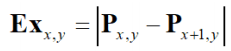
- Horizontal edges, Ey
- Vertical and horizontal edges:
Edge detection maths
- Taylor expansion for
- By rearrangement
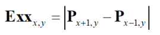
Templates for improved first order difference
Edge Detection in Vector Format
Templates for Prewitt operator

Applying the Prewitt Operator
Templates for Sobel operator
- The two kernels used for the 3 x 3 sobel operator.
Applying Sobel operator
Generalising Sobel
Generalised Sobel (non examinable)
Lecture 7: Further Edge Detection
What better ways are there to detect edges?
Canny edge detection operator
Formulated with three main objectives:
- Optimal detection with no spurious responses
- Good localisation with minimal distance between detected and true
edge position
- Single response to eliminate multiple responses to a single
edge.
Approximation
- Use Gaussian smoothing
- Use the Sobel operator (could combine with 1?)
- Use non-maximal suppression
- Threshold with hysteresis to connect edge points
Interpolation in non-maximum suppression
- Sobel edge detection is first order (equivalent to differentiation)
so gives us the change in x and the change in y, which we turn into a vector and use to find the
gradient direction (the dotted line in the diagram above), which will intuitively be at right angles to
the direction of the line (the non-dotted line above).
- In non-maximum suppression, we set all points that aren’t a
maximum along the line to zero (thereby thinning and sharpening the line).
- This is done by taking a line of points along the gradient
(dotted line) and setting all the points to zero, except those at a maximum.
- Interpolation is used to figure out the values of points
between pixels.
- Alternatively, we can round the direction to the nearest
horizontal/vertical/diagonal line
(Thanks Samuel Collins)
Hysteresis thresholding transfer function
To help better understand the function an example:
- The level is currently at black
- Brightness is increased until it reaches and passes the “upper
switching threshold”
- The level now changes to white
- If the brightness is decreased and goes below the “upper
switching threshold” it will not switch to black
- The brightness will have to decrease until it is below the
“lower switching threshold”, then it will switch back to black.
Action of non-maximum suppression and hysteresis
thresholding
Hysteresis thresholding vs uniform thresholding
As you can see, hysteresis thresholding is arguably better.
Canny vs Sobel
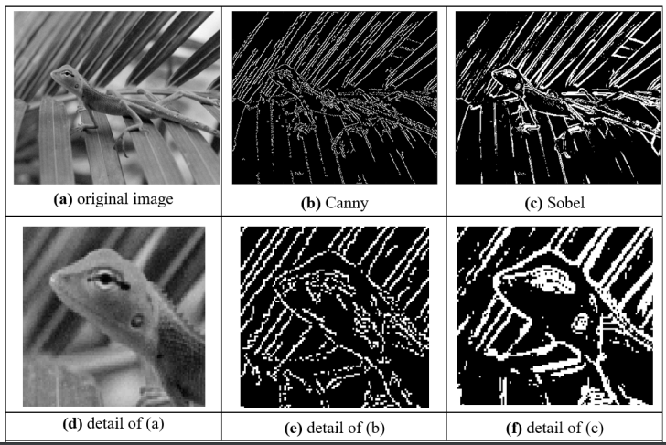
First and second order edge detection
Edge detection via the Laplacian operator
Mathbelts on…
(I think this is essentially just rearranging an equation)
Shape of Laplacian of Gaussian operator
Zero crossing detection
- Basic - straight comparison
- Advanced:
- You could compare every point to try and find where a 1 switches to
0.
- So you average the 4 points in the corners
- Then you get 4 summations
- If one of those is positive and another is negative, then there
is a zero crossing.
Marr-Hildreth edge detection
- Application of LoG (or DoG) and zero-crossing detection.
Comparison of edge detection operators
Newer stuff - interest detections (non-examinable)
Newer stuff - saliency
Lecture 8: Finding Shapes
How can we group points to find shapes?
Feature extraction by thresholding
- Let’s try to extract features from this image using thresholding.
- Low threshold doesn't look that good.
- Neither does the high threshold.
- In conclusion: we need to identify shape!
Template Matching
- This is a technique for finding small parts of an image which match
a template image.
- Intuitively simple
- Correlation and convolution
- Implementation via Fourier
- Relationship with matched filter, viz: optimality
- The template is the silverstone sign.
- This can be found in the image with template matching
- The accumulator space is a thing
Template matching in:
In Noisy images
- Noise is an issue for template matching
- You want to create a matcher which is robust to noise
In Occluded Images
Encore, Monsieur Fourier! (???) (non examinable)
Applying Template Matching (non examinable)
Here, have this pretty low res image of a reaaaaally realistic weapon identification
system, which can detect weapons like guns and knives. (aka, this is an application of template
matching.)
Windows XP anyone?
Applying SIFT in ear biometrics (non examinable)
- Have you ever wanted to identify people by their ears?
- Well now you can!
- Do this stuff with the arrows and circles and stuff
Hough Transform
- This is another feature extraction technique
- It can find imperfect instances of objects within a certain class of
shapes by a voting procedure
- The voting procedure is carried out in a parameter space, from which object
candidates are obtained as local maxima in a so-called accumulator space.
- [-Wiki]
- Performance equivalent to template matching, but
faster
- A line is points x,y gradient is
m intercept is c.
- You can rearrange to get:
- In maths it’s the principle of duality
Go and read the following article about the Hough Transform: http://aishack.in/tutorials/hough-transform-basics/
It’s really good.
Applying the Hough transform for lines
Hough Transform for Lines … problems
- m, c tend to infinity
- Change the parameterisation
- Use foot of normal
- Gives polar HT for lines

Images and accumulator space of polar Hough
Transform
Applying Hough Transform
Lecture 9: Finding More Shapes
How can we go from conic sections to general
shapes?
Hough Transform for Circles
- Again, it’s duality:
- Equation of a circle:
|
Points
|
Parameters
|
Radius
|
|
x,y
|
x0,y0
|
r
|
|
x0,y0
|
x,y
|
r
|
Circle Voting and Accumulator Space

Like before, but this time for circles.
Speeding it up
- Now it’s a 3D accumulator, fast algorithms are
available
- E.g. by differentiation:
- SO edge gradient direction can be used, e.g. 2D accumulator
by:

Applying the HT for circles
This can be used for detecting the shapes of an eye and iris.
Integrodifferential operator? (non examinable)
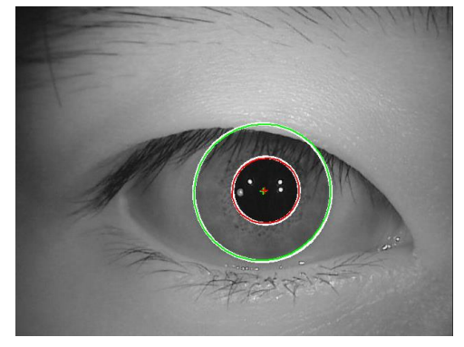
https://stackoverflow.com/questions/27058057/comparing-irises-images-with-opencv
Looks cool???
Arbitrary Shapes
- Use Generalised HT
- Form (discrete) look-up-table (R-table)
- Vote via look-up-table
- Orientation? Rotate R-table voting
- Scale? Scale R-table voting
- Inherent problems with discretisation (process of transferring
continuous functions to discrete)
R-table Construction
Pick a reference point in the image.
For each boundary point x, compute \Phi(x) - the gradient direction.
r is the distance from the reference point to the boundary point (radial distance),
and \alpha is the angle.
The table then stores each (r, \alpha) pair with the corresponding \Phi.
(Thanks Bradley Garrod)
Active Contours (non examinable)
- For unknown arbitrary shapes: extract by evolution
- Elastic band analogy
- Balloon analogy
- Discrete vs. continuous
- Volcanoes? 🌋
Geometric active contours (non examinable)
Couple’a hippos 🦛🦛
Parts-based shape modelling (non examinable)
This guy don’t look so good
Symmetry yrtemmyS (non examinable)
SPooky
Lecture 10 Applications/Deep Learning
Where is feature extraction used these
days?
This lecture is mostly extra (non examinable) stuff, so I’m only gonna cover
the hand with bow slides. If you want a look then jump to the slides: http://comp3204.ecs.soton.ac.uk/mark/Lecture%2010.pdf
Where is computer vision used?
What you see depends on the viewpoint you take
Deep Learning
Conclusions
- Computer vision is changing the way we live
- Computer vision uses modern hardware and modern cameras to achieve
what we understand by “sight”
- No technique is a panacea (a solution for all difficulties): many
alternatives exist
- Computer vision is larger than this course
Part 2: Jon
Note: Jon has done some really good handout summaries which have basically done my
job for me, they can be found here: http://comp3204.ecs.soton.ac.uk/part2.html
Highly recommend reading these probably.
But I will still go through the slides and make notes of hand with bow
slides :)
Lecture 1: Building machines that see
Key terms in designing Computer Vision systems
- Robust
- Repeatable
- Invariant
- Constraints
- You want your system to be robust and repeatable.
- You design your system to be invariant.
- You apply constraints to
make it work.
Robustness
- The vision system must be robust to changes in its environment
- i.e. changes in lighting; angle or position of the camera;
etc
Repeatability
- Repeatability is a measure
of robustness
- Repeatability means that the system must work the same over and
over, regardless of environmental changes
Invariance
- Invariance to environmental factor helps
achieve robustness and repeatability
- Hardware and software can be designed to be invariant to certain
environmental changes
- e.g. you could design an algorithm to be invariant to
illumination changes…
Constraints
- Constraints are what you apply to the
hardware, software and wetware (human brains in the system) to make sure your computer vision system
works in a repeatable, robust fashion.
- e.g. you constrain the system by putting it in a box so there
can’t be any illumination changes
Constraints in Industrial Vision
Software Constraints
- Really simple, but incredibly
fast algorithms
- Hough Transform is popular, but note that it isn’t all
that robust without physical constraints
- Actually, the same is true of most algorithms/techniques used in
industrial vision
- Intelligent use of colour…
Colour-Spaces (non examinable?)
Even though there is no hand with bow for these slides, they seem
useful.
- There are many different ways of numerically representing colour
- A single representation of all possible colours is called a
colour-space
- It’s generally possible to convert to one colour-space to another by applying a mapping (in the form
of a set of equations or an algorithm)
RGB Colour-space
- Most Physical image sensors capture RGB
- By far the most widely known space
- RGB “couples” brightness (luminance) with each
channel, meaning that the illumination invariance is difficult
HSV Colour-space
- Hue, Saturation, Value is another colour-space
- Hue encodes the pure colour as an angle
- Saturation is how vibrant the colour is
- And the Value encodes brightness
- A simple way of achieving invariance to lightning is to use just the
H or H & S components
LAB Colour-space
Lab color space is more perceptually linear than other color spaces. Perceptually linear
means that a change of the same amount in a color value should produce a change of about the same visual
importance. It is important especially when you try to measure the perceptual difference of two colors.
(Source)
- Can also be made invariant to lighting by only using
the AB components.
Physical Constraints
- Industrial vision is usually solved by applying simple computer
vision algorithms, and lots of physical constraints:
- Environment: lighting, enclosure, mounting
- Acquisition hardware: expensive camera, optics, filters
Vision in the wild
- So, what about vision systems in the wild, like ANPR (Automatic
Number-Plate Recognition) cameras, or recognition apps for mobile phones?
- Apply as many hardware and wetware constraints as possible, and
let the software take up the slack
- Colour information often less important than luminance
Lecture 2: Machine learning for pattern recognition
Feature Spaces
Many computer vision applications involving machine learning take the following
form
- This is where cool image processing happens
- Feature extractors make feature vectors from images
- Machine learning system uses featurevectors to make intelligent decisions
Key terminology
- Featurevector: a mathematical vector
- Just a list of (usually Real) numbers
- Has a fixed number of elements in it
- The number of elements is the dimensionality
of the vector
- Represents a point in a featurespace or equally a direction in the featurespace
- The dimensionality of a featurespace is the dimensionality of every vector within it
- Vectors of differing dimensionality can’t exist in the
same featurespace
Density and Similarity
Distance in featurespace
- Feature extractors are often defined so that they produce vectors that are
close together for similar inputs
- Closeness of two vectors can be computed in the feature space by
measuring the distance between the vectors.
Cats are a close distance apart, and are further away from the cluster of dogs in
this feature space.
Euclidean distance (L2 distance)
- L2 distance is the most intuitive distance…
- The straight-line distance between two points
- Computed via an extension of Pythagoras theorem to n dimensions:
Equation

The straight-line; “Euclidean distance”
Manhattan/Taxicab distance (L1 distance)
- L1 distance is computed along paths parallel to the axes of the
space:
Equation
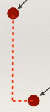
Essentially just like you are taking a taxi cab around the grid like streets of
manhattan
Cosine Similarity
- Cosine similarity measures the cosine of the angle between two
vectors
- Useful if you don’t care about the relative length of the
vectors
Equation
The angle between the two points from the origin
Choosing good featurevector representations for machine learning
- Choose features which allow to distinguish objects or classes of
interest
- Similar within classes
- Different between classes
- Keep number of features small
- Machine-learning can ge t more difficult as dimensionality of
featurespace gets large
Supervised Machine Learning: Classification
- Classification is the process of assigning a
class label to an object (typically represented by a
vector in a feature space).
- A supervised machine-learning algorithm
uses a set of pre-labelled training data to
learn how to assign class labels to vectors (and the corresponding objects).
- A binary classifier
only has two classes
- A multiclass classifier has
many classes
Linear Classifiers
Linear classifiers try to learn a hyperplane that
separates two classes in featurespace with minimum error
There can be lots of hyperplanes to choose from; differing classification algorithms
apply differing constraints when learning the classifier.
To classify a new image, you just need to check what side of the hyperplane it is
on.
Non-linear binary classifiers
Linear classifiers work best when the data is linearly separable.
Like this:
But what if the data is like this:
There is no hope for a linear classifier! 😭
Non-linear binary classifiers, such as Kernel support Vector
Machines learn non-linear decision boundaries. (basically a curved graph
separates the data instead of a straight one)
However, you have to be careful, you might lose generality by overfitting:
What class would the blue question mark actually belong to?
Multiclass classifiers: KNN
Assign class of unknown point based on majority class of closest K
neighbours in featurespace.
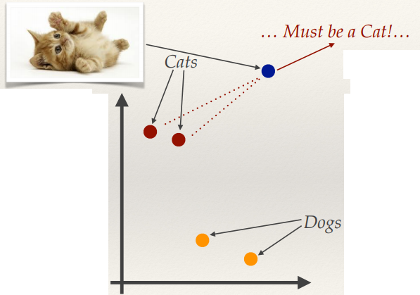
KNN Problems (non examinable?)
- Computationally expensive if there are:
- Lots of training examples
- Many dimensions
Unsupervised Machine Learning: Clustering
- Clustering aims to group data without any prior knowledge of what
the groups should look like or contain.
- In terms of featurevectors, items with
similar vectors should be grouped together by a clustering operation.
- Some clustering operations create overlapping groups; for now we’re only
interested in disjoint clustering methods that assign an item to a single group.
K-Means Clustering
StatQuest:
K-means clustering (good video to explain this!!!!!!!!!!!!!!!!)
- K-Means is a classic featurespace clustering algorithm for grouping data in
K groups with each group represented by a centroid:
- Pseudo code:
- The value of K is chosen
- K initial cluster centres are chosen
- The following process is performed iteratively until the
centroids don’t move between iterations:
- Each point is assigned to its closest centroid
- The centroid is recomputer as the mean of all the points
assigned to it. If the centroid has no points assigned it is randomly re-initialised to a new
point.
- The final clusters are created by assigning all points to
their nearest centroid.
Lecture 3: Covariance and Principal Components
Random Variables and Expected Values
- Variable that takes on different values due to chance
- The expected value (denoted E[X]) is the most likely value a
random variable will take.
Variance
- Variance (σ2) is the
mean squared difference from the mean (μ).
- It’s a measure of how spread-out the data is.
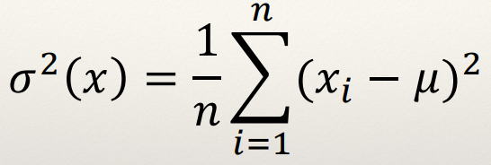
Equation
Technically it’s E[(X - E[X])2]
Covariance
- Covariance (σ(x,y)) measures how two variables change
together
- The variance is the covariance when the two variables are the same
(σ(x,y)=σ2(x))
- A covariance of 0 means the variables are uncorrelated
(Covariance is related to Correlation though…)
Equation
Technically it’s E[ (x - E[x]) (y - E[y]) ]
Covariance Matrix
- A covariance matrix encodes how all possible pairs of dimensions in
an n-dimensional dataset vary together.
The covariance matrix is a square symmetric matrix, as you
can see by the symmetry in the example above.
Mean Centring
- Mean Centring is the process of computing the mean (across each
dimension independently) of a set of vectors, and then subtracting the mean vector from every
vector in the set.
- All the vectors will be translated so their average positions is the
origin.
From top image to bottom image; mean centered around the origin.
Covariance matrix again
So then this means that
The covariance matrix is directly proportional to Z transposed, multiplied by Z,
where Z is the matrix formed by the mean-centred vectors (each row of matrix Z is one mean-centred vector) -
Hope this helps :) - Lorena
Principal axes of variation
Basis
- A basis is a set of n linearly independent (remember all the way back to first year
Foundations guys!) vectors in an n dimensional space
- The vectors are orthogonal (all right-angles to each other)
- They form a “coordinate system”
- There are an infinite number of possible bases

The first principal axis
- For a given set of n dimensional
data, the first principal axis (or just principal axis) is the vector that describes the direction of
greatest variance.
- (Big turquoise arrow pointing
up and to the right in the image below)
The second principal axis
- The second principal axis is a vector
in the direction of the greatest variance orthogonal (perpendicular) to the first major
axis.
- (Small lilac arrow pointing up
to the left in the image below)
The third principal axis
- In a space with 3 or more dimensions, the third principal axis is
the direction of greatest variance orthogonal to both the first and second principal axes.
- The fourth… and so on…
- The set of n principal axes of an n dimensional space are a basis.
Eigenvectors and Eigenvalues
Important Equation
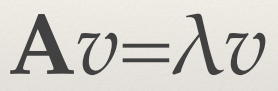
- A = n x n square matrix
- υ = n dimensional vector,
known as the eigenvector
- λ = scalar values, known as an eigenvalue
Properties
- There are at most n eigenvector-eigenvalue pairs.
- If A is symmetric, then the set of eigenvectors is orthogonal
- If A is a covariance matrix, then the eigenvectors are the principal axes
- The eigenvalues are proportional to the variance of the data along
each eigenvector
- The eigenvector corresponding to the largest
eigenvalue is the first principal component.
Finding Values
- For small matrices (n≤4) there are algebraic solutions to finding all the eigenvector-eigenvalues pairs
- For larger matrices, numerical solutions to the Eigendecomposition must be sought.
Eigendecomposition
Eigendecomposition takes a matrix and represents it in terms of its eigenvalues and
eigenvectors.
- Columns of Q are the
eigenvectors
- Diagonal eigenvalue matrix (Λii = λi)
- If A is real
symmetric (i.e. a covariance matrix), then Q-1 = QT (i.e. eigenvectors are orthogonal), so:
Summary
The Eigendecomposition of a covariance matrix A:
Gives you the principal axes and their relative magnitudes.
Ordering
- Standard Eigendecomposition implementations will order the
eigenvectors (columns of Q) such that the
eigenvalues (in the diagonal of Λ) are sorted
in order of decreasing value.
- Some solvers are optimised to only find the top k eigenvalues and corresponding eigenvectors, rather than
all of them.
Principal Component Analysis
Linear Transform
- A linear transform W projects data from one space into another:
- Original data stored in the rows of Z
- T can have fewer dimensions than Z
Linear Transforms
- The effects of a linear transform can be reversed if W is invertible:
- A lossy process if the dimensionality of the spaces is
different
PCA
- PCA is an Orthogonal Linear Transform that maps data from its original space to a space defined by the principal axes of the
data.
- The transform matrix W is just the
eigenvector matrix Q from the Eigendecomposition of
the covariance matrix of the data.
- Dimensionality reduction can be achieved by removing the eigenvectors with
low eigenvalues from Q (i.e. keeping the first L columns of Q assuming the
eigenvectors are sorted by decreasing eigenvalue).
PCA Algorithm
- Mean-centre the data vectors
- Form the vectors into a matrix Z, such that each row corresponds to a vector
- Perform the Eigendecomposition of the matrix ZTZ, to recover the eigen matrix Q and diagonal eigenvalue matrix Λ: ZTZ = QΛQT
- Sort the columns of Q and corresponding diagonal values of Λ
so that the eigenvalues are decreasing
- Select the L largest eigenvectors of Q (the first L columns) to create the transform matrix
QL
- Project the original vectors into a lower dimensional space,
TL: TL = ZQL
Eigenfaces
Spooky 0_0
Making Invariant
- Require (almost) the same object pose across images (i.e. full
frontal faces)
- Align (rotate, scale and translate) the images so that a common
feature is in the same place (i.e. the eyes in a set of face images)
- Make all the aligned images the same size
- (optional) Normalise (or perhaps histogram equalise) the images so
they are invariant to global intensity changes
Problems
- If the images are 100x200 pixels, the vector has 20000
dimensions
- That’s not really practical…
- Also, the vectors are still highly susceptible to imaging noise
and variations due to slight misalignments.
Potential Solution… Apply PCA
- PCA can be used to reduce the dimensionality
- Smaller number of dimensions allows greater robustness to noise
and mis-alignment
- There are fewer degrees of freedom, so noise/misalignment has
much less effect
- And the dominant features are captured
- Fewer dimensions makes applying machine-learning much more
tractable
Lecture 4: Types of image feature and segmentation
Image Feature Morphology
- There are 4 main ways of extracting features from an image:
- Global
- Grid/Block-based
- Region based
- Local
Global Features
- A Global Feature is extracted
from the contents of an entire image.
Grid or Block-based Features
- Multiple features are extracted; one per block
Region-based Features
- Multiple features are extracted; one per region
Local Features
- Multiple features are extracted; one per local interest point
Global Features
Image Histograms
- Simple global features can be computed from the average of the
colour bands of the image’s histogram.
- This wasn’t particularly robust, and couldn’t deal
well with multiple colours in the image.
- A more common approach to computing a global image description is to
compute a histogram of the pixel values.
Joint-colour histogram
- A joint colour histogram measures the number of times each colour
appears in an image.
- These are different to histograms in image editing programs with
compute separate histograms for each channel.
- The colour space is quantised into bins, and we accumulate the number of pixels in each bin.
- Technically, it’s a multidimensional histogram, but we
flatten it (unwrap) to make it a feature vector.
- Normalisation (i.e. by the number of pixels) allows the histogram
to be invariant to image size.
- Choice of colour-space can make it invariant to uniform lighting
changes (e.g. H-S histogram)
- Invariant to rotation
- But vastly different images can have the same histogram! Like these
two below:
 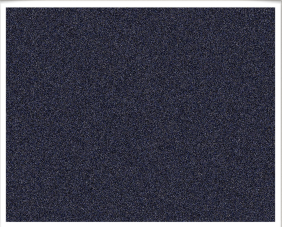
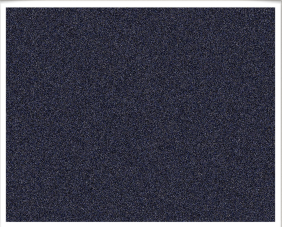
- Cool, right? Even though it’s, uh, bad; not invariant
to this kinda problem lol
Image Segmentation
What is segmentation?
- The first part in the process of creating region-based
descriptions…
- The process of partitioning the image into sets of pixels often called segments.
- Pixels within a segment typically share certain visual
characteristics.
Global Binary Thresholding
- Thresholding is the simplest form of segmentation
- Turns grey level images into binary (2 segments) by assigning
all pixels with a value less than a predetermined threshold to one segment, and all other pixels to the
other.
- Really fast
- Required a manually set static threshold
- Not robust to lightning changes
- Can work well in applications with lots of physical constraints
(lighting control and / or high-contrast objects)
Otsu’s thresholding method
- Otsu’s method (named after Nobuyuki Otsu) provides a way to
automatically find the threshold.
- Assume there are two classes (i.e. foreground &
background)
- The histogram must have two peaks
- Exhaustively search for the threshold that maximises interclass
variance.
More
detailed look over at wikipedia!
Adaptive / local thresholding
- Local (or Adaptive) thresholding operators compute a different
threshold value for every pixel in an image based on the surrounding pixels.
- Usually a square or rectangular window around the current pixel
is used to define the neighbours
Mean adaptive thresholding
Set the current pixel to 0 if its value is less than the mean of its neighbours plus a constant value; otherwise set to 1.
- Size of window
- Constant offset value
- Good invariance to uneven lighting / contrast
- But…
- Computationally expensive (at least compared to global
methods)
- Can be difficult to choose the window size
- If the object being imaged can appear at different distance to
the camera then it could break…
Segmentation with K-Means
- K-Means clustering also provides a simple method for performing
segmentation:
- Cluster the colour vectors (i.e. [r, g, b]) of all the pixels, and then assign each pixel to a segment based
on the closest cluster centroid.
- Works best if the colour-space and distance function are
compatible
- E.g. Lab colour-space is designed so that Euclidean distances
are proportional to perceptual colour differences
- Naïve approach to segmentation using k-means doesn’t
attempt to preserve continuity of segments
- Might end up with single pixels assigned to a segment, far away
from other pixels in that segment.
- Can also encode spatial position in the vectors being clustered:
[r, g, b, x, y]
- Normalise x and y by the width and height of the image to take
away the effect of different images sizes
- Scale x and y so they have more or less effect than the colour
components
Advanced segmentation techniques
- Lots of ongoing research into better segmentation techniques:
- Techniques that can automatically determine the number of
segments
- “Semantic segmentation” techniques that try to
create segments that fit the objects in the scene based on training examples
Connected Components
Pixel Connectivity
- A pixel is said to be connected with another if they are spatially
adjacent to each other.
- Two standard ways of defining this adjacency:
- 4-connectivity
- 8-connectivity (like minesweeper!)
Connected Component
A connected component is a set of pixels in which every pixel is connected either
directly or through any connected path of pixels from the set.
Connected Component Labelling
- Connected Component Labelling is the process of finding all the
connected components within a binary (segmented) image.
- Each connected segment is identified as a connected
component.
- Lots of different algorithms to perform connected component
labelling
- Different performance tradeoffs (memory verses time)
The two-pass algorithm
- On the first pass:
- Iterate through each element of the data by column, then by
row (Raster Scanning)
- If the element is not the background
- Get the neighbouring elements of the current element
- If there are no neighbours, uniquely label the current
element and continue
- Otherwise, find the neighbour with the smallest label and
assign it to the current element
- Store the equivalence between neighbouring labels
- On the second pass:
- Iterate through each element of the data by column, then by
row
- If the element is not the background
- Relabel the element with the lowest equivalent label
Lecture 5: Shape description and modelling
Extracting features from shapes represented by connected
components
Borders
- There are 2 types of pixel borders:
inner and outer.
Say you have this pixel shape:
Inner Border
A border made up of only pixels from the shape; the outermost pixels within the
shape.
Outer Border
A border where the outline of pixels outside the shape make up the border.
Two ways to describe shape
- Region Description
- Boundary Description
Region Description: Simple Scalar Shape Features
Area and Perimeter
Compactness
- Compactness measures how tightly packed the pixels in the component
are.
- It’s often computed as the weighted ratio of area to perimeter
squared:
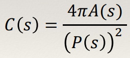
Centre of Mass
Irregularity / Dispersion
A measure of how “spread-out” the shape is
Moments
Standard Moments
- Moments describe the distribution of pixels in a shape.
- Moments can be computed for any grey-level image. For the
purposes of describing shape, we’ll just focus on moments of a connected component
- Standard two-dimensional Cartesian moment of an image, with
order p and q and I(s) as the pixel intensity, it is defined as:
- In the case of a connected component, this simplifies to:
- The zero order moment of a connected component m00 is just the area of the component. The centre of mass is
(centroid):
Central Moments
- Standard 2D moments can be used as shape descriptors
- But, they’re not invariant to translation, rotation and
scaling
- Central Moments are computed about the
centroid of the shape, and are thus translation invariant:
- Note: μ01 and
μ10 are always 0, so have no descriptive
power
Normalised Central Moments
- Normalised Central Moments are both
scale and translation invariant
Boundary Description
Chain Codes
- Simple way of encoding a boundary.
- Walk around the boundary and encode the direction you take on
each step as a number.
- Some direction examples are shown below left.
- Then cyclically shift the code so it forms the smallest possible
integer value (making it invariant to the starting point)
Chain Code Invariance
- Can be made rotation invariant:
- Encode the differences in direction rather than absolute
values.
- Can be made scale invariant:
- Resample the component to a fixed size
- Doesn’t work well in practice
Chain Code Advantages and Limitations
- Can be used for computing perimeter area, moments, etc.
- Perimeter for and 8-connected chain code is N(even numbers in
code) + √2N(odd numbers in code)
- Practically speaking, not so good for shape matching
- Problems with noise, resampling effects, etc
- Difficult to find good similarity/distance measures
Fourier Descriptors
- The Fourier transform can be used to encode shape information by
decomposing the boundary into a (small) set of frequency components.
- There are two main steps to consider:
- Defining a representation of a curve (the boundary)
- Expanding the representation using Fourier theory
- By choosing these steps carefully it is possible to create
rotation, translation and scale invariant boundary descriptions that can be used for recognition,
etc.
Region Adjacency Graphs
- Build a graph from a set of connected components
- Each node corresponds to a component
- Nodes connected if they share a border
- Can easily detect patterns in the graph
- E.g. “a node with one child with four
children”
- Invariant to non-linear distortions, but not to occlusion.
Theres some more stuff in the slides which isn’t hand with bow-ed, go
have a look
Slides 40-47: http://comp3204.ecs.soton.ac.uk/lectures/pdf/L5-shapedescription.pdf
Active Shape Models and Constrained Local Models
- ASMs/CLMs extend a PDM (Point Distribution
Model) by also learning local appearance around each point
- Typically just as an image template.
- Using a constrained optimisation algorithm, the shape can be
optimally fitted to an image
- Plausible shape
- Good template matching
Lecture 6: Local interest points
What makes a good interest point?
- Invariance to brightness change (local changes as well as global
ones)
- Sufficient texture variation in the local neighbourhood
- Invariance to changes between the angle / position of the scene to
the camera
How to find interest points
- There are lots of different types of interest point types to choose
from
- We’ll focus on two specific types and look in detail at
common detection algorithms:
- Corner detection - Harris and
stephens
- Blob Detection - Difference-of-Gaussian
Extrema
The Harris and Stephens corner detector
Basic Idea
- Search for corners by looking through a small window
- Shifting that window by a small amount in any direction
should give a large change in
intensity
Harris & Stephens: Mathematics
Weighted average change in intensity between a window and a shifted version [by
(Δx,Δy)] of that window:
- The Taylor expansion allows us to approximate the shifted
intensity.
- Taking the first order terms we get this:

- Substituting and simplifying gives:
- 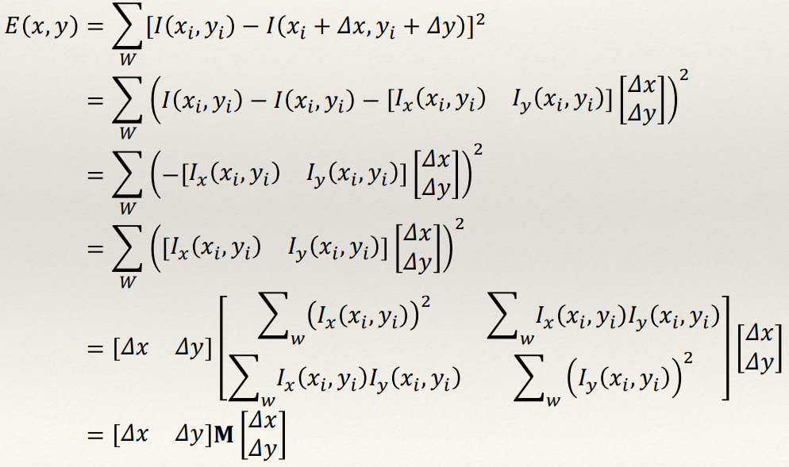
- Bruh.
Structure Tensor
- The square symmetric matrix
M is called the Structure
Tensor or the Second Moment matrix
- It concisely encodes how the local shape intensity function of the
window changes with small shifts
Eigenvalues of the Structure Tensor
- Think back to covariance matrices…
- As with the 2D covariance matrix, the structure tensor describes and
ellipse: xTMx=c (this is a quadratic form)
- The eigenvalues and vectors tell us the rates of change and
their respective directions
Harris & Stephens Response Function
- Rather than compute the eigenvalues directly, Harris and Stephens defined a
corner response function in terms of the determinant and trace of M:
- Smart.

Harris & Stephens Detector
- Take all points with the response value above a threshold
- Keep only the points that are local maxima (i.e. where the
current response is bigger than the 8 neighbouring pixels)
Scale in Computer Vision
The problem of scale
- As an object moves closer to the camera it gets larger with more
detail… as it moves further away it gets smaller and loses detail…
- If you’re using a technique that uses a fixed size processing
window (e.g. Harris corners, or indeed anything that involves a fixed kernel) then this is a bit of a
problem!
Scale space theory
- Scale space theory is a formal framework for handling the scale
problem.
- Represents the image by a series of increasingly smoothed / blurred images
parameterised by a scale parameter t.
- t represents the amount of
smoothing.
- Key notion: Image structures smaller than
√t have been smoothed away at scale t.
The Gaussian Scale Space
- Many possible types of scale space are possible (depending on the
smoothing function), but only the Gaussian function has the desired properties for image
representation.
- These provable properties are called the “scale space axioms”.
Formally, Gaussian scale space is defined as:
Where t ≥ 0 and,
Normally, only a fixed set of values of t are used - it’s common to use integer powers of 2 or √2
Nyquist-Shannon Sampling theorem
If a function x(t) contains no frequencies higher than B hertz, it is completely
determined by giving its ordinates at a series of points spaced 1/(2B) seconds apart.
...so, if you filter the signal with a low-pass filter that
halves the frequency content, you can also half the sampling rate without loss of information…
Gaussian Pyramid
- Every time you double t in
scale space, you can half the image size without loss off information!
- Leads to a much more efficient representation
- Faster processing
- Less memory
Multi-scale Harris & Stephens
- Extending the Harris and Stephens detector to work across scales is
easy…
- We define a Gaussian scale space with a fixed set of scales and
compute the corner response function at every pixel of each scale and keep only those with a response
above a certain threshold.
Blob Detection Finally
Laplacian of Gaussian
- Recall that the LoG is the second derivative of a Gaussian
- Used in the Marr-Hildreth edge detector
- Zero crossing of LoG convolution
- By finding local minima or maxima, you get a blob detector!
Scale space LoG
- Normalised scale space LoG defined as:
- By finding extrema of this function in scale space, you can find blobs at their representative scale (~√2t )
- Just need to look at the neighbouring pixels!
Very useful property: if a blob is detected at
(x0, y0
; t0) in an image, then
under a scaling of that image by a factor s, the same blob would be detected at (sx0, sy0 ; s2t0) in the scaled image.
Scale space DoG
- In practice it’s computationally expensive to build a LoG
scale space.
- But, the following approximation can be made:
- This is called a Difference-of-Gaussians (DoG)
- Implies that the LoG scale space can be built from subtracting
adjacent scales of a Gaussian scale space
DoG Pyramid
- Of course, for efficiency you can also build a DoG pyramid
- An oversampled pyramid
as there are multiple images between a doubling of scale.
- Images between a doubling of scale are an octave.
Lecture 7: Local features and matching
Local features and matching basics
Local Features
Multiple features are extracted; one per local interest point
Why extract local features?
- Feature points are used for:
- Image alignment
- Camera pose estimate & Camera calibration
- 3D reconstruction
- Motion tracking
- Object recognition
- Indexing and database retrieval
- Robot navigation
- …
Example: Building a panorama
- You need to match and align the images
- Detect feature points in both images
- Find corresponding pairs
- Use the pairs to align the images
Problem 1:
- Detect the same points independently
in both images
- We need a repeatable detector
Problem 2:
- For each point correctly recognise the corresponding one
- We need an invariant, robust
and distinctive descriptor
Two distinct types of matching problem
- In stereo vision (for 3D reconstruction) there are two important
concepts related to matching:
- Narrow-baseline stereo
- Wide-baseline stereo
Narrow-baseline stereo
- This is where the two images are very similar - the local features
have only moved by a few pixels.
- Typically the images are from similar points in time
(Notice how the red-circled background object only appears in the second image; so
these two images have a slight difference to them)
Wide-baseline stereo
- This is where the difference in views is much bigger.
(I don’t think I need to circle the whole image lol)
Two distinct types of matching problem
- These concepts extend to general matching:
- The techniques for narrow-baseline stereo are applicable to
tracking where the object doesn’t move too much between frames
- The techniques for wide-baseline stereo are applicable to
generic matching tasks (object recognition, panoramas, etc.).
Robust local description
Descriptor Requirements
- Robustness to rotation and lighting is not so important.
- Descriptiveness can be reduced as the search is over a smaller
area.
- Need to be robust to intensity change, invariant to
rotation.
- Need to be highly descriptive to avoid mismatches (but not so
distinctive that you can’t find any matches!)
- Robust to small localisation errors of the interest point
- The descriptor should not change too much if we move it by a few
pixels, but to change more rapidly once we move further away.
Matching by correlation (template matching)
(Narrow baseline) template matching

- Interest points in two images with a slight change in
position

- Local search windows, based on the interest point in the first
image
- The template can then be matched against target interest points in
the second image
Problems with wider baselines
- Not robust to rotation
- Sensitive to localisation of interest point
- (although not such a problem with a small search window)
- With wider baselines you can’t assume a search area
- Need to consider all the interest points in the second
image
- More likely to mismatch :(
Local Intensity Histograms
Use local histograms instead of pixel patches
- Describe the region around each interest point with a pixel
histogram
- Match each interest point in the first image to the most similar
point in the second image (i.e. in terms of Euclidean distance [or other measure] between the
histograms)
Local histograms
- Not necessarily very distinctive
- Many interest points likely to have similar distribution of
grey-values
- Not rotation invariant if the sampling window is square or
rectangular
- Can be overcome using a circular window
- Not invariant to illumination changes
- Sensitive to interest point localisation
Overcoming localisation sensitivity
- Want to allow the window around the interest
point to move a few pixels in any direction without changing the
descriptor
- Apply a weighting so that pixels near the edge of the sampling
patch have less of an effect, and those near the interest point have a greater effect
- Common to use Gaussian weighting centred on the interest point for this.
Overcoming lack of illumination invariance
- Illumination invariance potentially achievable by normalising or
equalising the pixel patches before constructing the histogram
- ...but there is another alternative!................. I’m
not going to tell you……. Joking…….
Local Gradient Histograms
Gradient Magnitudes and Directions
- From the partial derivatives of an image (e.g. from applying
convolution with Sobel), it is easy to compute the gradient orientations / directions and
magnitudes
Gradient Histograms
- Instead of building histograms of the raw pixel values we could
instead build histograms that encode the gradient magnitude and direction for each pixel in the sampling
patch.
- Gradient magnitudes (and directions) are invariant
to brightness change!
- The gradient magnitude and direction histogram is also more distinctive.
Building gradient histograms
- Quantise the directions (0°-360°) into a number of
bins
- For each pixel in the sampling patch, accumulate the gradient
magnitude of that pixel in the respective orientation bin
Rotation Invariance
- Gradient histograms are not naturally rotation invariant
- But, can be made invariant by finding the dominant orientation
and cyclically shifting the histogram so the dominant orientation is in the first bin.
The SIFT feature
Adding spatial awareness
- The SIFT (Scale Invariant Feature Transformer) feature is widely
used
- Builds on the idea of a local gradient histogram by incorporating
spatial binning, which in essence creates multiple gradient
histograms about the interest point and appends them all together into a longer feature.
- Standard SIFT geometry appends a spatial 4x4 grid of histograms
with 8 orientations
- Leading to a 128-dimensional feature which is highly discriminative and robust!
SIFT Construction: sampling

SIFT Construction: weighting
SIFT Construction: binning
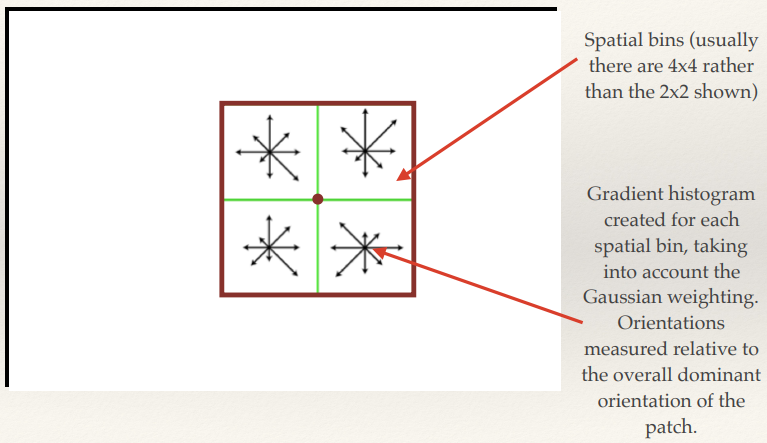
Matching SIFT features
Euclidean Matching
- SImplest way to match SIFT features is to take each feature in turn
from the first image and find the most similar in the second image
- Threshold can be used to reject poor matches
- Unfortunately, doesn't work that well and results in lots of
mismatches.
Improving matching performance
- A better solution is to take each feature from the first image, and
find the two closest features in the second image.
- Only form a match if the ratio of distances between the closest
and second closest matches is less than a threshold.
- Typically set at 0.8, meaning that the distance to the closest
feature must be at least 80% of the second closest.
- This leads to a much more robust matching strategy.
Lecture 8: Consistent matching
Feature distinctiveness
- Even though the most advanced local features can be prone to being
mismatched.
- There is always a tradeoff in feature distinctiveness.
- If it’s too distinctive it will not match subtle
variations due to noise of imaging conditions.
- If it’s not distinctive enough it will match
everything.
Constrained matching
- Assume we are given a number of correspondences between the interest
points in a pair of images
- Is it possible to estimate which of those correspondences
are inliers (correct) or outliers (incorrect/mismatches)?
- What assumptions do we have to make?
- By assuming a geometric mapping between the two scenes, can we
recover that mapping and eliminate the mismatches?
Geometric Mappings
What are geometric transforms?
- In general, a geometric mapping can be thought of as a transform
function that maps the x, y coordinates of points in one image to another.
Go have a look at some on Wikipedia here: https://en.wikipedia.org/wiki/Geometric_transformation
Point Transforms
We’re interested in transforms that take the following form: x’=Tx
The Affine Transform
The affine transform is defined as
It’s more convenient to write this as a single transform matrix by adding an
extra dimension to each vector:
Translation
Translation and Rotation
Scaling
Aspect Ratio
Shear
Degrees of Freedom
Affine Transform
6 DoF: translation + rotation + scale + aspect ratio + shear
Similarity Transform
4 DoF: translation+rotation+scale
More degrees of freedom
Normalise by w so that the transformed
vector is [•,•,1]
Homogeneous coordinates
The Planar Homography (Projective Transformation)
Recovering a geometric mapping
Simultaneous equations
- It is possible to estimate a transform matrix from a set of point
matches by solving a set of simultaneous equations
- Need at least 4 point matches to solve a Homography or 3 to
solve an affine transform
- The actual solution technique isn’t important…
- It is important to note that in the presence of noise, and with potentially
more matches than required, that we have to solve an overdetermined
system
- We need to seek the minimum error or least-squares solution
Least-squares
Robust Estimation
Problem: Noisy data
- Need a way to deal with estimating a model (i.e. a transform matrix)
in the presence of high amounts of noise (i.e. mis-matches)
- Least-squares will be highly suboptimal, and probably find a
very bad solution.
- Ideally, we want to identify the correct data (the inliers) and
the bad data (the outliers)
- Then estimate the model using only the good data.
Robust estimation techniques
- The problem of learning a model in the presence of inliers and
outliers comes under an area of mathematics called robust
estimation or robust model fitting
- There are a number of different possible techniques
RANSAC: RANdom SAmple Consensus
This is an iterative method to estimate parameters of a mathematical model for a set of observed
data that contains outliers.
Assume:
M data items required to estimate model T
N data items in total
Algorithm:
- Select M data items at random
- Estimate model T
- Find how many of the N data items fit T within tolerance tol,
call this K (i.e. compute how many times the absolute residual is less than tol). The points that have
an absolute residual less than tol are the inliers; the other points are the outliers.
- If K is large enough, either accept T, or compute the
least-squares estimate using all inliers, and exit with success.
- Repeat steps 1..4 nIterations times
- Fail - no good T fit of data
Further applications of robust local matching
Object recognition & AR
- Image of object is matched against scene, and recognised if
there is a consistent match
- Data can be added to a scene on the basis of a match
3D reconstruction
- It’s possible to estimate depth, and ultimately build a
complete 3d scene from sets of point correspondences formed from matching local features
Problems with direct local feature matching
Local feature matching is slow!
- Typical image (800x600) might have ~2000 DoG Interest points/SIFT
descriptors
- Each SIFT descriptor is 128 dimensions
- Now assume you want to match a query image against a database of
image…
- The distance between every query feature and every other feature
needs to be calculated
- Can this be optimised somehow?
Efficient Nearest Neighbour Search
- How can we quickly find
the nearest neighbour to a query point in a high dimensional space?
- Index the points in some kind of tree structure?
- Hash the points?
- Quantise the space?
K-D Trees
- Binary tree structure that partitions the space along axis-aligned
hyperplanes
- Typically take each dimension in turn and splits on the median
of the points in the enclosing partition.
- Stop after a certain depth, or when the number of points in a
leaf is less than a threshold
- Search by walking down the tree until a leaf is hit, and then
brute-force search to find the best in the leaf.
- This is not guaranteed to be the best though…
- To have to walk back up the tree and see if there are any better
matches, and only stop once the root is reached.
- (note you don’t have to check a subtree if it’s
clear that all points in that subtree are further than the current best.)
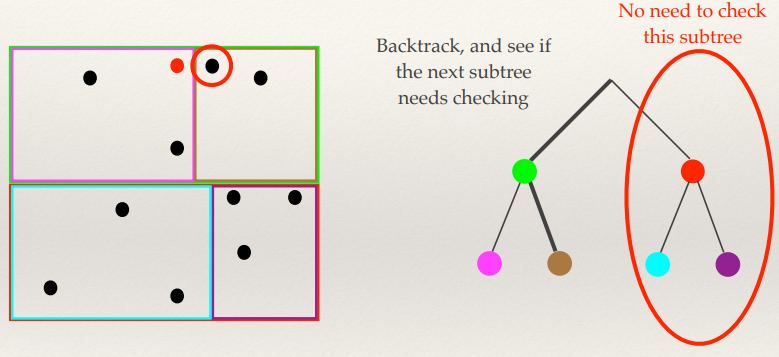
K-D Tree problems
- Doesn’t scale well to high dimensions
- You tend to end up needing to search most of the tree
- There are approximate versions that won’t necessarily return the exact answer that do scale (if you
don’t mind the potential for mismatch)
Hashing
- Locality Sensitive Hashing (LSH) creates hash codes for vectors such
that similar vectors have similar hash codes!
Sketching
- A technique called sketching concatenates binary hashes into a bit
string.
- With the correct LSH function, the Hamming distance between a
pair of sketches is proportional to the Euclidean distance between the original vectors
- Can easily compress SIFT features to 128 bits
- Hamming distance computation is cheap
- Lookup tables and bitwise operations
Lecture 9: Image search and Bags of Visual Words
Text Information Retrieval
The bag data
structure
- A bag is an unordered data like a
set, but which unlike a set allows elements to be inserted multiple times.
- Sometimes called a multiset or a
counted set
Bag of Words
- Say you have a document with this content:
- “the quick brown fox jumped over the
lazy dog”
- A bag of words describing this document would be:
Text processing (feature extraction)
The Vector-Space Model
- Model each document by a vector
- Model each query by a vector
- Assumption: documents that are “close together” in
space are similar in meaning.
- Use standard similarity measures to rank each document to a
query in terms of decreasing similarity
Bag of Words Vectors
- The lexicon or vocabulary is the set of all (processed) words across all documents known to the system.
- We can create vectors for each document with as many dimensions as
there are words in the lexicon
- Each word in the document’s bag of words contributes to a
count to the corresponding element of the vector for that word.
- In essence, each vector is a histogram of the word occurrences
in the respective document.
- Vectors will have a very high number of dimensions, but will be
very sparse.
The Vector-space Model
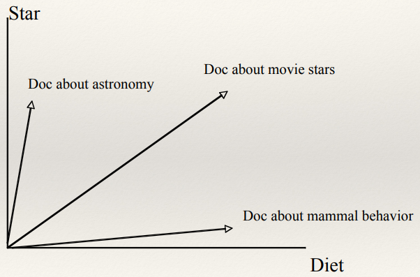
Searching the VSM
Recap: Cosine
Similarity

Inverted Indexes
- A map of words to lists of postings
|
Aardvark
|
[doc3:4]
|
|
Astronomy
|
[doc1:2]
|
|
Diet
|
[doc2:9; doc3:8]
|
|
...
|
|
|
Movie
|
[doc2:10]
|
|
Star
|
[doc:13; doc2:4]
|
|
Telescope
|
[doc1:15]
|
- A posting is a pair formed by a
document ID and the number of times
the specific word appeared in that document
- So for the first entry: Aardvark appeared
4 times in document 3.
Computing the Cosine Similarity
- For each word in the query, lookup the relevant posting list and
accumulate similarities for only the documents seen in those postings lists
- Much more efficient than fully comparing vectors…
Weighting the vectors
- The number of times a word occurs in a document reflects the
importance of that word in the document.
- Intuitions:
- A term that appears in many documents is not important: e.g., the, going come,...
- If a term is frequent in a document and rare across other
documents, it is probably important in that document.
Possible weighting schemes
- Only presence (1) or absence (0) of a term recorded in
vector.
- Frequency of occurrence of term in document included in
vector.
- Term frequency is the frequency count of a term in a
document.
- Inverse document frequency (idf) provides high values for rare
words and low values for common words.
Vector Quantisation
Learning a Vector Quantiser
- Vector quantisation is a lossy data compression technique.
- Given a set of vectors, a technique like K-Means clustering can be
used to learn a fixed size set of representative vectors.
- The representatives are the mean vector of each cluster in
k-means.
- The set of representation vectors is called a codebook
Vector Quantisation
- Vector quantisation is achieved by representing a vector by another
approximate vector, which is drawn from a pool of representative vectors.
- Each input vector is assigned to the “closest”
vector from the pool.
Visual Words
SIFT Visual Words
- We can vector quantise SIFT descriptors (or any other local
feature)
- Each descriptor is replaced by a representative vector known as a
visual word
- In essence the visual word describes a small image patch with a certain pattern of pixels
- In many ways the process of applying vector quantisation to
local features is analogous to the process of stemming words.
- The codebook is the visual equivalent of a lexicon or
vocabulary.
Bags of Visual Words
- Once we’ve quantised the local features into visual words,
they can be put into a bag.
- This is a Bag of Visual Words (BoVW)
- We’re basically ignoring where in the image the local
features came from (including ignoring scale)
So why are we doing all this word stuff for a module about
vision?....
Histograms of Bags of Visual Words
- Like in the case of text, once we have a BoVW and knowledge of the
complete vocabulary (the codebook) we can build histograms of visual word occurrences!
- This is nice… it gives us a way of aggregating a variable
number of local descriptors into a fixed length vector.
- Useful for machine learning
- But also allows us to apply techniques for text retrieval to images
Visualising Visual Words
The effect of codebook size
- There is one key parameter in
building visual word representations - the size of the vocabulary.
- Too small, and all vectors look the same
- Too big, and the same visual words might never appear across
images
Content-based Image Retrieval
BoVW Retrieval
- With the visual word representation, everything used for text
retrieval can be applied directly to images
- Vector space model
- Cosine similarity
- Weighting schemes
- Inverted index
Optimal codebook size
- Inverted index only gives a performance gain if the vectors are
sparse (you don’t want to end up explicitly scoring all documents)
- Visual words also need to be sufficiently distinctive to minimise
mismatching
- Implies a very big codebook
- Modern research systems often use 1 million or more visual words
for SIFT vectors
Problems with big codebooks
- There’s a slight problem…
- Need to use k-means to learn 1 million clusters in 128
dimensions from 10’s of millions of features
- Non-trivial!
- Vector quantisation has the same problems
- Have to use approximate methods, like approximate k-d
trees
Overall process for building a BoVW retrieval
system
- Collect the corpus of images that are to be indexed and made
searchable
- Extract local features from each image
- Learn a large codebook
from (a sample of) the features
- Vector quantise the features, and build BoVW representations for
each image
- Construct an inverted index with the BoVW representations
Lecture 10: Image classification and
auto-annotation
Multilabel classification
- Oh my gosh, this picture has a cat in it, so it must be
classified as cat.
- But wait, it has a dog in it as well, so it’s
classified as a dog.
- AAHHHH there is both a cat and a dog in the image
AAAAA….
- Wait…
- Why can’t we just classify it as both?
- In the context of images often called Automatic
Annotation
Object Detection / Localisation
Slide summary: Challenges in Computer Vision
This is a summary of slides slides 7-16, go look in the slides if
you’re interested
http://comp3204.ecs.soton.ac.uk/lectures/pdf/L10-classification.pdf
- Object Recognition in natural scenes
- Scene/Activity Classification
- Automatic Annotation (it’s not that good sometimes)
- The fundamental problem of computer vision: The
Semantic Gap
- In an image for computer vision there are:
- Semantics
- Object Labels
- Objects
- Descriptors
- Raw media
- Upside-down cars lol
- History:
- Very powerful, but computationally demanding
- 2001 - Cascades of Haar-like features
- Very popular for face detection
- Combined ideas from SIFT and the integral images used for
computing Haar-like features
- Interest in auto-annotation grew from the late 90s Bags of
“Visual Words” were rather important!
Aside: Optimal codebook size
- The codebook vocabulary needs to be much smaller than for doing image
search(ing?)
- In general, machine-learning techniques need much smaller
vectors (for both performance and effectiveness)
- The visual words can be allowed to be less distinctive, allowing
a little more variation between matching features.
- Typically, the number of visual words might be as small as a few
hundred, and up to a few thousand.
Another slide summary: Stuff
Slides 18-26
- Machine Translation (2002)
- Identifying areas in an image, using visual words!
- SIngular Value Decomposition
- Probabilistic Latent Factor Models
- Non-negative Matrix Factorisation
- Visual words again!
- Research focus shifted a little to use of bigger datasets in the
mid-late 2000s.
- Interest in simpler (but more scalable) classifiers grew
- Classifying with BoVW
- BoVW histogram representations are incredibly useful for image
classification and object detection
- Commonly used with fast linear classifiers and SVMs
- Over time the features used to create BoVW representations have
improved
- Early global colour visual terms
- Consider each pixel as a visual word based on the quantisation
of its colour to a discrete set of values.
- The BoVW Histogram is just a joint colour histogram that we saw
earlier
- Sunset colours :o
- Visual words from regions/segments
- Visual words from interest points
- Salient region detection
- Local Descriptors
- Vector Quantisation
- Vocabulary of visual terms learnt through hierarchical
k-means
- Word Occurrence Vectors
- Local features extracted around interest points work okay for
classification, but there are more recent strategies that can work better…
Dense Local Image Patches
Dense SIFT
- Rather than extracting your SIFT features at DoG interest points,
you could extract them across a dense grid - this gives much more coverage of the entire image.
Pyramid Dense SIFT
- For even better performance and coverage, you can sample in a
Gaussian pyramid
- Note that the sampling region is a fixed size, so at higher
scales you sample more content
Egyptian Rhinoceros
Spatial Pyramids
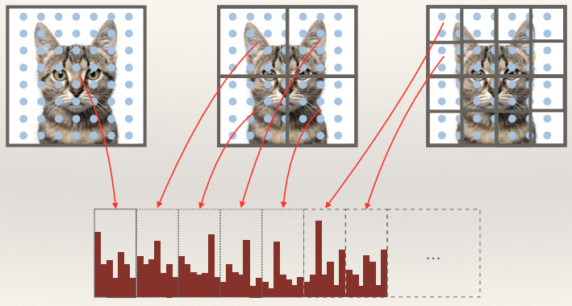
Developing and benchmarking a BoVW scene classifier
Evaluation Dataset
- Common for academic research to use standardised datasets for
developing scene classifiers and comparing results
- Datasets are usually split into labelled “training”
and “test” sets.
- Only the training set can be used to train the classifier
- Sometimes the test set labels are withheld completely to ensure there is no cheating
Building the BoVW
- Firstly the raw features need to be extracted from the training
images
- Then (if necessary) learn a codebook from these features
- i.e. using k-means on the raw features
- Might be a uniform random sample of all the features rather than all of them
- Apply (vector) quantisation to the raw features and count the number
of occurrences to build histograms for each image
Training classifiers
- Classifiers can be trained using the histograms.
- e.g. OvR linear classifiers with a kernel map.
- You might train on a subset of the training data
- And use the remaining data to “validate” and
optimise parameters.
- Once you’ve chosen the optimal parameters you can then
re-train using the optimal values.
Classifying the test set
- You’re now in a position to apply the classifiers to the test
data:
- Extract the features
- Quantise the features (using the codebook developed from the
training set!)
- COmpute the occurrence histograms
- Use the classifiers to find the most likely class
Evaluating Performance
- Lots of ways to evaluate the performance of classification on the
test (and validation) set.
- Conceptually the simplest summary measure is probably average precision
- This is literally the proportion of number of correct
classifications to the total number of predictions
Phew, I think we’ve covered all the examinable content. I’ll
summarise the bonus slides just for completeness.
Lecture 11: Towards 3D vision
Look at the slides for pictures :) http://comp3204.ecs.soton.ac.uk/lectures/pdf/L11-towards3d.pdf
- Architecture
- Urban Planning
- Virtual Tourism
- Clothing & body measurement
- Art
- SLAM (Simultaneous localization and mapping)
- Cultural Heritage
- Forensics
- Surveillance
- Motion Capture (Films & Games)
- Camera Geometry
- Camera Calibration
- Measuring Depth
- Narrow Baseline Stereo
- Stereo Camera
- Epipolar geometry
- Dense narrow-baseline stereo
- Multiple images can be used to jointly infer 3D structure, and
the camera pose and intrinsics of each camera
- Point matches (i.e. SIFT) are used as the basis for
triangulating 3D points from the 2D images
- Reconstructing Venice
- Monocular Vision
- Shadow Scanner
- Structured Light Imaging
- LIDAR
- PrimeSense (Kinect)
Summary Summary
- 3D computer vision has lots of practical applications
- Camera models give a mathematical description of how a pixel in a 2D
image is related to a point in a 3D scene
- Camera calibration can be used to find the parameters of a
camera
- Multiple views of a scene can be used to infer depth
- There are lots of other techniques for capturing depth that only
require a single sensor
Programming for computer vision & other musings
related to the coursework
Writing code for computer vision
- Images usually stored as arrays of integers
- Typically 8-bits per pixel per channel
- 12-16 bit increasingly common (e.g. HDR imaging)
- Uses unsigned pixel values
- Compressed using a variety of techniques
Most vision algorithms are continuous
- E.g. convolution with a continuous function (i.e. Gaussian)
- If we were writing the next Adobe Photoshop, it would be important
that we kept out images in a similar format (integer pixels, same number of bits)
- We would essentially round pixel values to the closest integer
and clip those out of range
- For vision applications we don’t want to do this as
we’ll lose precision
Always work with floating point pixels
- Unless they’ve been specifically optimised for integer math,
all vision algorithms should use floating point pixel values
- Ensure the best possible discretisation from operations
involving continuous functions
- Higher effective bit depth (32/64 bits per pixel per
band)
- Ability to deal with negative values
- Turns out to be very important for convolution!
- Ability to deal with numbers outside of the normal range
- Just because a pixel has a grey level of 1.1 doesn’t mean
it’s invalid, just that it’s too bright to be displayed in the normal colour gamut.
Guidelines for writing vision code
- Convert any images to float types immediately once you’ve read
them
- Don’t convert them back to integer types until you need to
(i.e. for display or saving)
- Be mindful that a meaningful conversion might not just involve
rounding if you want to preserve the data.
Convolution
We probably do need to know how to do convolution so...
- Convolution is an element-wise multiplication in the Fourier domain
(c.f. Convolution Theorem)
- f﹡g = ifft(fft(f) . fft(g))
- Whilst S and F might only contain real numbers, the FFTs are complex
(real + imagj)
- Need to do complex multiplication!
Aside: phase and magnitude
- Given a complex number (n = real + imagj) from an FFT we can
compute its phase and magnitude
- phase = atan2(imag, real)
- magnitude = sqrt(real*real + imag*imag)
- We might perform this transformation to display the FFT as it
conceptually helps us understand what the FFT is doing
- We can’t use this representation to perform convolution
however (need to transform back to complex form first)
Aside: Displaying FFTs
- FFTs are often re-ordered so that the DC component (0- frequency)
component is in the centre:
Template Convolution
- In the time domain, convolution is:
- Notice that the image or kernel is “flipped” in time
- Also notice that the is no normalisation or similar
int kh = kernel.height;
int kw = kernel.width;
int hh = kh / 2;
int hw = kw / 2;
Image clone = new Image(image.width, image.height);
for (int y = hh; y < image.height - (kh - hh); y++) {
for (int x = hw; x < image.width - (kw - hw); x++) {
float sum = 0;
for
(int j = 0, jj = kh - 1; j < kh; j++, jj--) {
for (int i = 0, ii = kw - 1; i < kw; i++, ii--) {
int rx = x + i - hw; int ry = y + j - hh;
sum +=
image.pixels[ry][rx] * kernel.pixels[jj][ii];
}
}
clone.pixels[y][x] = sum;
}
}
Formatting bruh
What if you don’t flip the kernel?
- Obviously if the kernel is symmetric, there is no difference
- However, you’re actually not computing convolution, but
another operation called cross-correlation
- * represents the complex conjugate
- (you can compute this with the multiplication of the FFTs just like
convolution: iFFT(FFT(f)* . FFT(g))
Ideal Low-Pass filter
- “Ideal” low pass filter removes all frequencies above a
cutoff
Ideal Low-Pass filter - problems
Gaussian filters - why
Building Gaussian Filters
High-pass filters
- “To obtain a high-pass filtered image, subtract a lowpass
filtered image from the image itself”

- ILP = I﹡G
- IHP = I-ILP
- IHP = I - I﹡G
- IHP = I﹡δ - I﹡G
- IHP = I﹡(δ - G)
Note - Don’t do this!
- IHP = I﹡(δ - G) is not the same as IHP = I﹡(1 - G)

High-pass filters have a mixture of negative and positive
coefficients
- …that means the resultant image will also have positive and
negative pixels
- this is important - for example it can tell us about the
direction of edges:
- (remember convolution means kernel flipped)
- +values in the output image mean edge from right to left
- -values in output image mean edge from left to right
- Convolution implementation MUST NOT:
- Normalise
- result in unsigned types
Building hybrid images
…is really simple
- Add the low pass and high-pass images together
- Don’t:
- average the two images
- do a weighted combination of the two images
- just add them (and clip if necessary)
Happy Revising!
(not my hybrid, add a suggestion if you know whose it is)
(- Thanks Matthew Barnes, god of notes (this is not a real
hybrid lol))
Go look at the bonus lecture yourself: http://comp3204.ecs.soton.ac.uk/lectures/pdf/VisionRetrospective.pdf
TL;DR
The TL;DRs are TL;DRs themselves; so much content
The TL;DRs are actually pretty long, there’s just a lot of important content.
Part 1: Mark
See collab TL;DR below Jon’s part.
Mark (formatted by Joshua
Gregory)
Part 2: Jon
Summaries from end of slides and hand-out notes.
Lec 1
A computer vision system is not just software: it is any hardware, software and wetware (i.e. humans) that make up the complete system. To engineer a computer
vision system, you need to think about how you can achieve the required level of robustness by constraining the problem at hand
and incorporating sufficient invariance to potentially changing
environmental factors.
- Robust and repeatable
computer vision is achieved through engineered invariance
and applied constraints.
- RGB
- HSV (Hue, Saturation, Value)
Lec 2
Machine learning is a fundamental part of high-level computer vision (interpreting what is seen, versus the low-level, which is all about processing the image). The standard computer vision
pipeline goes from the image, through a process of feature extraction, to a pattern recognition
component that makes inferences. Machine learning is a standard way of training the pattern recognition system.
- Extracting features is a key part of
computer vision
- Typically, these are numerical vectors that can be used with machine-learning techniques.
- Featurevectors can be compared by measuring
distance.
- Classification learns what class to assign a feature to.
- Clustering groups similar
features.
- Sometimes you’ll need to figure out the Euclidean distance
between 2 points in the feature space.
- Point p=(p1, p2, …, pn) and q=(q1, q2, …, qn)
- Cosine similarity another measure for vectors. It is not a distance
measure.
- Similarity = 1 if vectors same direction; decreases as the angle
increases.
- Classification: assign class labels,
binary or multiclass.
- ML algorithm learns on pre-labelled training
data.
- Hyperplane through the feature space, separates the classes.
- Linear classifiers: think of it as the hyperplane is a straight line in the vector space.
- Linear classifiers more efficient than KNN, don’t need training data and only need to check side of hyperplane for
unlabelled point.
- Non-linear classifier: Support Vector
Machine (SVM)
- K-nearest-neighbours (KNN)
- Find class of unlabelled vector by finding majority class of closest K training points.
- Can become computationally expensive when lots of training example or large dimensions.
- Algorithm to cluster data
in feature space.
- Clusters represented by centroids.
- Algorithm:
- K value set before
- Randomly chose centroids
- Each point assigned closest centroid
- Centroid recomputed as mean
- If Centroid has no points assigned, randomly
re-initialise
- This is done iteratively until the centroids don’t
move.
- K-means always converges, but not necessarily to most
optimal solution.
Lec 3
Understanding the shape of data in a feature space is
important to effectively using it. In addition, by understanding
the distribution of really highly dimensional data, it is possible to
determine the most important modes of variation of that data, and thus
represent the data in a space with many fewer dimensions.
- Covariance measures the “shape”
of data by measuring how different dimensions change together.
- The principle axes are a basis, aligned such they describe most directions of greatest variance.
- The Eigendecomposition of the covariance
matrix produces pairs of eigenvectors (corresponding to the
principal axes) and eigenvalues (proportional to the
variance along the respective axis).
- PCA (Principal Component Analysis) aligns data with its
principal axes, and allows dimensionality reduction by discounting axes with low variance.
- Eigenfaces applies PCA to vectors made from
pixel values to make robust low-dimensional image descriptors.
- Variance - how “spread-out”
the data is from the mean
- n data points: xi ...
- μ mean
- Covariance - how 2 variables change
together.
- Variance = covariance when 2 variables the same.
- Variable uncorrelated when
covariance = 0.
- Covariance matrix - square symmetric matrix
containing all the covariance values.
- Principal axes of variation - linearly
independent vectors, orthogonal, act as basis
- Major axis data most spread
- Minor axis perpendicular to major
- Eigendecomposition of covariance matrix
- A is square matrix
- v is non-zero eigenvector
- λ is eigenvalue
- If matrix A is covariance matrix,
then eigenvectors are principal components.
- Vector with largest eigenvalue is first principal axis and so
on…
- The Eigendecomposition is thus a way of finding the principal
axes
- PCA projects data in an original space to a new space defined by the
basis of principal axes.
- Reduce the dimensionality of the data, get
rid of axes with small variance.
PCA steps summary:
- Mean-centre the data vectors
- Form vectors in matrix Z, so
each row corresponds to vector
- Do Eigendecomposition of matrix ZTZ, to get eigenvector matrix Q and diagonal eigenvalue matrix Λ:
- Sort columns of Q and values of
Λ to decreasing order.
- Select L largest eigenvectors of
Q (first L columns) to make
transform matrix QL.
- Project original vectors into lower dimensional space, TL:
- Eigenfaces - face recognition, PCA to
features, represent images far fewer dimensions.
- All images need to be same size, aligned
- Also generative model
Overall approach
Training images:
- Images flattened to vectors
- Mean vector computed and stored
- Vectors mean centred
- PCA applied, project to lower dimensional space. Transform matrix
stored.
- Low dimensional vectors used as training data for classifier
- KNN with distance threshold
Testing image:
- Image flattened to vector, mean vector subtracted
- Vector projected by PCA basis (transform matrix) to lower
dimensional space
- Vector given to classifier, generates class label
Lec 4
Features that can be extracted from images fall into four main categories. Global features are
extracted from the entire image. Region-based
features are extracted from regions of the image called
connected components. Detecting connected components requires that you
first apply a process called segmentation to partition the image into
multiple segments.
Image features can be categorised into one of four main categories:
- Global
- Grid-based (block-based)
- Region-based
- Local, “interest points”
- A common type of global feature is a global colour
histogram.
- Region-based methods need regions to be
detected - this process is called segmentation... many
different approaches
- Connected components are segments in which the pixels are all reachable by a connected path.
- Feature morphology refers to the form or shape of a feature
- Joint colour histograms - (global)
accumulate binned pixel values.
- Normalisation of histogram for image of
different sizes.
- Colour space important.
- Segmentation - (region) set of pixels share
certain visual characteristics.
- Thresholding simplest form, grey image
→ binary image.
- Work well when constrained, designed to stand out (QR
codes)
- Manual thresholding value, or ...
- Otsu’s thresholding method - assumes 2
classes, bi-modal histogram.
- Combined spread of 2 classes minimal (intra-class
variance)
- Adaptive thresholding: e.g. sets pixel to bg
(background) if the value less than mean of neighbours plus offset, fg foreground otherwise.
- K-Means clustering for
segmentation.
- Connected Components - segment where all
pixels reachable from other (adjacently)
- Connected-component labelling - binary
image → set of connected components
Two-pass algorithm:
First pass
- Raster scan data
- If element not bg, then get neighbour elements
- No neighbours? Uniquely label current element
- Otherwise find neighbour with smallest label, assign current
element
- Store equivalence between neighbouring labels
Second pass
- Raster scan again
- If element not bg, then relabel element with lowest equivalent
label
Lec 5
Basic shape description involves extracting
characteristic features that describe the shape of a connected component. Shape descriptors can be used together with machine learning, or manually defined
models to classify shapes into different classes; a
common example of this is classifying shapes into letters of the alphabet
in order to achieve optical character recognition. Statistical shape models describe how the shape
of an object (or set of objects) can change (through internal movement and/or through changes in pose). In
addition to describing shapes, statistical shape models can be used to find instances of a shape in an
image.
- Many different ways to describe the
shape of connected components, the
choice depends on required invariance
- Multiple shapes can efficiently be represented by
a RAG, very robust
- Point distribution models apply PCA to x-y
coordinate pairs across multiple images to produce a low-dimensional parametric
model
- ASMs/CLMs also model local
appearance, and can use this to optimise the fit of the model parameter to match an image.
- Scalar features (specifically of connected
components)
- Inner border
- Outer border
- Approximated by:
- Compactness - ratio of area to perimeter
squared:
- Irregularity (dispersion) - ratio of major chord length to area.
- 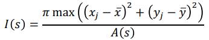
- x and y bar are coordinates of centroid.
- Moments - describe distribution of pixels in
a shape (connected component)
- 2D Cartesian moment, order p and
q:
- Connected component simplifies to:
- Zero order moment of connected component
m00 is just
the area.
- Centre of mass is (centroid):
- Central Moments - translation invariant,
compute about the centroid
- μ10 and
μ10 both
equal 0, so give no information, but higher order do.
- Normalised central moment both translation
and scale invariant:
- Chain codes - encode boundary of object,
step around object and note down direction of each step, either 4 or 8 directions.
- Rotating the sequence so it is the smallest integer, makes it start position invariant.
- Rotation invariance achieved by
storing difference between consecutive numbers.
- Scale invariance theoretically by
resampling shape, usually doesn’t work well in practice.
- Used to computer area, perimeter and moments directly!
- Not good for shape matching due to
- Noise, resampling, problem generating good similarity/distance
metrics.
- Fourier descriptors - encode shape
information by decomposing boundary into set of frequency components.
- Two main steps, choose carefully to make very invariant boundary descriptors:
- Define representation of curve (boundary)
- Expanding representation using Fourier theory
- Region Adjacency Graphs (RAG) - (trees)
describe layout of connected components relative to
each other.
- Nodes correspond to components and connected if shape
border
- Invariant to: distortion (including rotation, scale, translation,
non-linear transformations)
- Not invariant to
- Point Distribution Models (PDM) - Like
eigenfaces, applies similar process to set of points representing a shape
- Corresponding 2D points manually created from set of N training face images
- Number of points fixed at M
- Iterative process called Generalized Procrustes Analysis, align
points
- Mean shape created
- Shape matrix created
- Each column stores information on how the x or y ordinate of a
point on a face can change.
- Active Shape Models (ASM) / Constrained Local Models (CLM)
- take PDM further, incorporate what image should look like around each
point.
- Small pixel patch about each point - is template.
- Addition of data allows model to be better fitted to unseen
image
- Each point tried to move to local optimum while PDM contains all
points
- Active Appearance Models - same thing as
ASMs/CLMs, but instead of local features, try to jointly optimise global appearance of face against
PDM.
Lec 6
The detection of local interest points that are
stable under varying imaging conditions has a huge number of
applications in computer vision. Research in this area goes back as
far as the 1960s and 70s. The Harris and Stephens corner detection technique
developed in 1988 is a classic example of a detection technique with impressive robustness. A related problem to the detection of interest points is the
problem of scale (the size at which an object appears in an image).
Scale space theory allows interest point techniques to be developed
that are invariant to changes in scale (i.e. the object moving further away). The Difference-of-Gaussian blob detector is an example of such a scale-space blob detection technique.
- Interest points have loads of
applications in computer vision.
- They need to be robustly detected, and invariant to rotation, lighting change etc. (sufficient but not too much texture
variation in local neighbourhood)
- There are 2 types: corners and
blobs
- Harris & Stephens is common corner detector
- Finding extrema in a multi scale DoG pyramid provides robust blob
detector
- Scale space theory allows us to find
features (corners and blobs) of different sizes
- Harris & Stephens Corner Detector -
classic algorithm.
- Considers the brightness of a small patch of image.
- Then when you slightly shift that patch then
- If brightness same, original patch not stable point
- If brightness changes a lot, original patch stable
- Computing the weighted sum-squared difference of window and shifted
window:
- Point (x,y) and shift (∆x, ∆y):
- This equation can be “processed” to make:
- Square symmetric matrix M concisely
describes the shape of the local weighted difference
function.
- Basically encoding of image derivatives in the x,y and xy
directions.
- Called the second moment matrix aka
structure tensor.
- You can use the absolute values of
the eigenvalues directly (explained somewhere
else)
- But Harris & Stephens came up with a scheme that avoids explicitly computing the Eigendecomposition by formulating a
corner response function (R(x, y) in terms of the determinant and
trace of M:

- K usually 0.04 - 0.06
- Value of R:
- R > 0: Corner
- R < 0: edge
- | R | = small: flat
- Actually find corners, compute R for each pixel, keep only ones over threshold.
- Filter out points not local maxima of R within small window (8
neighbouring pixels)
- Scale space theory - formal framework for handling
images at different scales by represent image as family of smoothed
images parameterized by the size of the smoothing kernel used for suppressing fine detail.
- Scale parameter: t, image structure of spatial size smaller than
~sqrt(t) mostly smoothed away in scale-space level at scale t.
- Gaussian Scale Space - smoothing
function is Gaussian kernel
- Formally the Gaussian scale space of an image f(x, y) is the
family of derived signals L(x, y; t) defined by the convolution of the image with the 2D Gaussian
kernel:
- Semicolon implies convolution only performed over variables x and
y.
- Definition valid for all t ≥ 0
- Gaussian Pyramids.
- Multiscale Harris & Stephens - define
Gaussian scale space with fixed set of scales and compute corner response function at every pixel of
each scale, keep only those with response function above threshold.
- Local extrema in DoG Scale Space
- Laplacian of Gaussian (LoG) is the 2nd differential of a Gaussian convolved
with an image (the kernel is shaped like a Mexican hat).
- Zero-crossings of function, get Marr-Hildreth edge detector.
- By finding local max and min, you get blob detector.
- Very useful property: if blob is detected at
(x0,y0; t0) then in the scaled image (factor of s) same blob detected at (sx0,sy0; s2t0)
- In practice, DoG approximation used instead of LoG.
- Build gaussian scale space, subtract
adjacent scales to produce DoG scale space to then search for
extrema.
- Every time you double scale, you can half image size, pyramid can be
constructed.
Lec 7
How to extract local features from these interest points. A number of techniques have been proposed in the past in order to
extract robust local descriptors, starting from simple pixel
histograms, through to advanced features like the SIFT
descriptor, which encode weighted local image gradients.
Once these descriptors have been extracted, they can be used for image
matching.
- Features extracted around interest points have lots of practical
uses in computer vision.
- Matching scenarios basically fall into two
categories:
- Narrow-baseline where the
difference in image is slight
- Local image templates are often suitable
descriptors
- Wide-baseline where there are bigger
differences in pose
- Gradient histogram descriptors are
good here
- Local feature matching basics - find all
local features in one images that have correspondences in another image.
- Applications: image retrieval, 3D reconstruction, panoramas,
tracking….
- Stereo vision, 2 concepts:
- Narrow-baseline stereo is where 2
images very similar - local features moved by few pixels.
- Wide-baseline stereo where differences
much bigger.
- Robust local description - type of descriptor
dependant on task.
- Narrow-baseline, rotation not issue,
descriptiveness not too important, lighting not changed much.
- Wider baselines, local descriptors with
attributes:
- Robust to uniform intensity
changes in pixel values around interest point.
- Invariance to orientation, features not change as image rotated.
- Robustness to placing of interest point
by few pixels
- Descriptors for visually differing local regions be unique and
far apart in feature space.
- Matching by correlation (template matching) - rectangle region around interest point, use pixel values directly.
- Sum-Squared-Difference perform basic
matching.
- Work well with small differences, but not in
wide-baseline.
- Local Intensity Histograms - histogram of
pixel intensities of local region.
- Circular window, (mostly) rotation invariant.
- Can use Gaussian weighting.
- Not invariant to illumination changes.
- Histograms not very distinctive :(
- Local Gradient Histograms - encode
gradient directions within a window
- Easy to compute in x and y directions.
- Magnitude of gradient:
- Gaussian weighting can be applied
- Invariant to uniform intensity changes.
- Not rotation invariant!
- Have to robustly compute “dominant orientation”
subtract from pixels orientation to be rotation invariant.
- The SIFT Feature - builds spatial array of orientation-magnitude
histograms about the interest point.
- Pixel contributions linearly
interpolated across nearest spatial bins avoid
discontinuities
- Magnitudes weighted by Gaussian centred on interest point
- Typical: 4x4 spatial grid, 8 orientation bins; 128 dimensional
feature vector.
- Very descriptive and discriminative feature
- Matching SIFT Features - often compared
using Euclidean distance
- Take each feature from first image and find closest in second
image.
- Threshold to stop poor matches
- However, tends to result in lots of incorrect matches, not
robust to big viewpoint changes.
- Better: take each feature from the first image, find 2 closest in second
image, only form match if ratio of distances between closest and second closest is less than threshold
(typically 0.8)
Lec 8
When comparing two images by matching local feature, we need to eliminate mismatches. By applying geometric
constraints to the problem of finding corresponding interest points between pairs of
images, it is possible to both reduce the number of mismatches and potentially learn
a geometric mapping between the two images. Amongst many other applications,
these transforms can be used to build panoramas from multiple images. The presence of such a transform is a
good indicator for a match between the two images, and is commonly used in object recognition and image
retrieval applications.
- Inconsistent local feature
matches can be removed by assuming some form of constraint
holds between the two images
- This is usually a geometric mapping
- Affine transform or Homography
- Can be estimated by finding the least-squares solution of a set
of simultaneous equations
- Robust methods such as RANSAC allow
inliers and outliers to
be determined whilst learning the mapping
- Interest point matching is slow…
- K-D Trees and Hashing
can help
- Applying constraints to matching - even best
local features can be mismatched
- Tradeoffs in distinctiveness:
- Can be too distinctive or not enough, not match with subtle
variations or not match at all
- You can estimate which correspondences are inliers
or outliers
- Geometric mappings - assume object is flat,
then can search for geometric mapping satisfied by correct corresponding points.
- It is a transform function maps x,y coords from 1 image to other
- T is transform matrix
- x,y column vectors for coordinates
- Affine Transform - combination of
translation, scaling, aspect ratio, rotation and skewing.
- Affine transforms always preserve parallel
lines
- Standard 2D transform:
- A is 2x2 transform matrix encodes
scale, rotation, skew, and b is translation vector.
- Single matrix multiplication (extra dimension of fixed value
1):
- 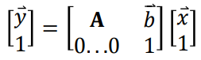
- 3x3 matrix:
- Said to have 6 degrees of freedom.
- Doesn’t allow for perspective effects, as it preserves
parallel lines
- 2D projective transform or (Planar) Homography:
- Normalization by w because non-linear.
- The vector [wx’,wy’,w]T is called a homogeneous coordinate.
- Deal with transform as matrix
- a-f are affine parameters.
- g-h define keystone distortions, make originally parallel lines
come together after transform.
- Solve set of homogeneous linear equations for T
- Common to compute least-squares estimate of transform matrix.
- It minimises the sum-squared error in prediction.
- Error of single point called residual; difference between predicted and observed value.
- Robust estimation - least squares problem
with noise.
- Mismatches can throw off estimated transform
- How to determine inliners, we need them for better transform
estimate
- Number of algorithms one is RANSAC
- Random Sample Consensus
- Algorithm:
- Assume: M data items required to
estimate model T, N data items in total
- Select M data items at random
- Estimate model T
- Find how many of the N data items fit T within tolerance tol, call
this K. points that have an absolute residual less than tol are the inliers; the other points are
outliers.
- If K is large enough, either accept T, or compute least-squares
estimate using all inliers, and exit with success.
- Repeat steps 1..4 nIterations items
- Fail - no good T fit of data
- RANSAC picks some pairs of points randomly, estimates
transform.
- If enough inliers, algorithm stops, transform
re-estimated……
- Improving matching speed - biggest problem
is speed.
- Brute-force of 128-D SIFT takes long.
- Ways to speed it up: K-D Trees
- Binary tree structure
- Each node splits specific dimension of space in two
- Leaf nodes store number of points corresponding to the points that have
made it down the tree to that point
- Fast nearest neighbour search done…….
- Hashing
- Locality Sensitive hashing Functions, vectors that are spatially
similar, similar hash codes.
- Sketching - binary string encodings for features,
compared more efficiently
Lec 9
Content-based image retrieval (CBIR) are systems that can search for images
with an image as the query. Research on CBIR systems started in the
early 90’s, but it is only more recently with ubiquitous mobile computing and applications like Google
Goggles that the technology has matured. We’ve seen how (local)
descriptors can be used to find matching objects
within images, but we’ve also seen that the matching process is rather computationally expensive.
For CBIR applications we need to be able to search datasets of millions
of images almost instantaneously. In the field of textual document search, techniques to efficiently index and efficiently search
massive datasets of text documents are well understood. One of the biggest advances in CBIR has been to
apply these textual indexing techniques to the image domain by extracting bags of
visual words from images and indexing these.
- Effective and efficient
text search can be achieved with bags of words, the
vector-space model and inverted
indexes.
- Vector-quantisation can be applied to local features,
making them into visual words.
- Then you can apply all the same
techniques used for text to make efficient retrieval systems
- This is a good way of making highly scalable, effective and efficient
content-based image retrieval systems
- Most text-search systems represent text as a bag of
words
- A bag is an unordered data structure
like a set, but can have elements multiple times.
- Create bag from text document:
- Break into words (tokenisation)
- Process words to reduce variability (eg get rid of
“ing” at end)
- Remove common words (like “the”)
- Vector-space model - text documents
represented by vectors
- Vectors contain counts of frequency of words in the lexicon (the set of all possible words)
- Histograms of word counts, and they are
highly sparse.
- Query turned into vector form, ranked
by similarity.
- Cosine similarity often used, less
affected by magnitude.
- Many documents have 0 similarity.
- Often cosine sim can be weighted
- Words that appear a lot in docs
should have less weight
- Common weighting scheme: Frequency-inverse document
frequency (tf-idf)
- In practice vectors never made, BoW just indexed directly as inverted index.
- Map of words to postings lists.
- Posting is a pair containing document identifier and word count.
- Only made if word count > 1
- Can quickly find which docs a word occurs in, and how many.
- Really efficient computation.
- Vector-quantisation - lossy data compression technique
- K-Means clustering used to learn fixed size set of representative vectors.
- Represent a vector by another approximate vector, draw from a pool of vectors. Each input vector assigned to “closest”
vector from pool.
- Bag of Visual Words (BoVW) - apply text
techniques to computer vision
- A visual word is a local
descriptor vector (e.g. SIFT vector) that has been vector quantised.
- Set of representative vectors is the visual
equivalent of the lexicon (codebook)
- SIFT - each visual word represents a prototypical
pattern of local image gradients
- Set of local descriptors can be transformed to fixed
dimensionality histogram by counting the number of occurrences of each representative vector.
- BoVW Retrieval - use same techniques
for text retrieval.
- Visual words indexed directly, searched by cosine
- Important parameter: size of codebook.
- Only works well efficiently if vectors sparse
- Ensure visual words distinctive to minimize mismatching
- Implies you need large codebook… ~1 million
typically
- This is long.
- And expensive.
- Find interest points + extract local features from all
images
- Learn codebook from sample of features
- Perform vector quantisation to assign each feature to a
representative visual word
- Construct an inverted index
Lec 10
We’ve looked at how features can be extracted from images, and how supervised machine learning
techniques like linear
classifiers and k-nearest neighbours can be
used to train a computer vision system to predict a class for a particular feature input. Current research
is looking at how we might make computers able to see in the human
sense, fully understanding the content of a visual scene. The choice of feature for image
classification is very important. We saw how a Bag of Visual
Words (BoVW) representation was a powerful technique for image search. It turns out that BoVWs
are very useful for use in high
performance image classification.
- Object recognition, scene
classification and automatic annotation are all important tasks in computer vision.
- Researchers are striving to narrow the
“semantic gap” between what computers can
perceive, compared to humans,
- The BoVW approach lends itself
to high-performance image classification
- Performance is increased if the local features are sampled densely
- Typical system takes in image, passes through feature
extractor and eventually feeds features to machine learning system to make
decisions.
- Supervised ML algorithm uses pre-labelled training
data for assigning class labels to vectors
- Binary classifier - 2 classes
- Multiclass classifier - multiple
classes
- Multilabel classifier can predict multiple
labels or classes.
- With probabilities/confidences.
- Often called automatic image annotation
or auto-annotation
- Doesn’t determine where in an image a thing is, just looks for presence
of the thing.
- Object recognition attempts to localise an
object and determine class.
- Current research challenges
- Unconstrained object recognition in natural scenes
- Global classification of images into scene
categories/events/topics.
- Automatic annotation of large sets of imagery.
- Fundamental problem to solve: make computers
see images like humans.
- “Semantic understanding” - overall meaning of
image
- Historically BoVW has been important.
- The histograms created also powerful global descriptors and
object detectors
- Auto Annotation treated like language translation with semantic space.
- Raw features from SIFT, and quantised descriptors of segments even colour of
pixels.
- Codebook needs to be much smaller for ML, for performance and effectiveness
- Visual words can be less distinctive, little more variation
- Number of visual words few hundred, up to a few
thousand.
- Classification improved by sampling image at
greater rate
- Dense SIFT, densely sampled grid, rather
at interest points
- Pyramid Dense SIFT, Gaussian Scale
Space
- BoVW representations augmented with spatial
pyramid; sub-histograms of visual word occurrences for overlapping windows in
image
- Improves performance, as learns where in image objects likely appear.
- Pyramid Histogram of Words (PHOW)
- Developing / Benchmarking BoVW scene classifier
- Use standardised datasets when
developing/comparing results of classifiers.
- Training and test
data sets
- Only training set used to train classifier
- Test set withheld.
- Raw features extracted from training images.
- Codebook of features, use k-means. Uniform random
sample of all features rather than all of them for speed.
- Apply vector quantisation to raw
features, count the number of occurrences to build histograms of visual words for each image.
- Classifiers trained using histograms
- Might train on subset of training data to “validate” and “optimise” parameters.
- Re-train with all training data.
- Can now apply classifiers to test data:
- Extract features.
- Quantise the features (using codebook)
- Compute occurrence histograms
- Use classifiers to find most likely class
- Lots of ways to evaluate the performance of classification on test set.
- Simplest is average precision
- Proportion of number of correct
classifications to total number of predictions
TL;DR By Mark Towers
Mark (edited by Joshua Gregory)
“These notes may miss something, please say if I have.
Thanks” - Mark
- Lecture 1: Eye and Human vision
- The human eye is a complex
machine, with cameras borrowing several similar ideas like retina,
lens. The image coming into the eye is flipped
upside down by the lens with the brain automatically flipping the image without
thinking.
- The retina (the light sensitive part
of the eye) with rods for low-light and black-white vision while the cones
provide colour vision. However cones are most sensitive to green then red then blue.
- Mach bands are an optical
illusion whereby the contrast between edges of slightly differing
shades of grey is exaggerated when they are touching.
- Neural networks are an attempt to
replicate the way that the brain works for vision
- Lecture 2: Image formation
- When decomposing an image into bits,
the most significant
bits have the largest influence
on the image. As the bit position increases, the more
information is represented.
- Resolution is the number of pixels for the
width and the height of
the image
- Fourier transformation: Any periodic function can
be converted to the sine and cosine waves
of different frequencies. It is also possible to reconstruct
signals from its fourier transform. The magnitude and the
phase, is calculated by Pythagoras' theorem
and the angle of the hypotenuse in the complex plane.
- Lecture 3: Image sampling
- Aliasing is an effect that causes different signals
to become indistinguishable when sampled. It also refers to the
distortion or artifacts that results when a signal reconstructed from samples is different from the original continuous signal.
- Sampling signals: if an original signal is a
continuous function, then digitally sampling it requires a good sampling
frequency. So the higher the sample rate, the
better representation of the signal can be captured.
- Wheel motion is an example of where sampling
rate matters in vision as if the sample rate and the wheel rotations per second are
synchronous then it can make it seem like the wheel is moving in
reverse.
- Sampling theory known as Nyquist’s sampling
theorem for one-dimension says that for each point of interest (pixel or musical
sample), twice the frequency should be gathered.
- It is possible to reconstruct a signal
from transformed components using the fourier transformation. This means the fourier transforms have a
forward (to transform from a time space to frequency space) and a
backward transformation called the inverse. Where the variables x and y
are for space, u and v are for frequency and is pixel x and y in the image.
- Shifting an image doesn’t affect the
magnitude of the fourier transform of the image, but it does affect the
phase.
- Rotating the image does affect the
fourier transform and rotates it in the same way.
- Filtering: by finding the phase of an image by the
fourier transform, this gives access to the frequency
components of the image. This can be used to find the high detail parts of the images
by a high-pass filter or all of the low level details with a
low-pass filter.
- Additional transformation types: fourier, discrete cosine and hartley.
- Applications of the 2D fourier transformation:
understanding and analysis of
images, speeding up algorithms through the use of the function,
representation invariant properties (rotation and shift), coding of
images by magnitude and phase
and recognition and understanding of textures.
- Lecture 4: Point operators
- Image histograms are a graph of the
frequency of brightness for an image (global feature)
- An image can be brightened using the formula below where N is the new image, O is the old image, k is the gain, l is the
level and x, y is the coordinates.
- Intensity mapping allows for the changing of
the output brightness (intensity) following this
function where it is limited to the min and max values according to the second function. Where Nmax is
the maximum limit, Nmin is the minimum limit, Omax is the maximum output and Omin is the minimum output
and Ox,y being the old image coordinates and Nx, y being the new image coordinates.
- Histogram equalisation improves contrast
in images.
- Equations:
- Thresholding is a way of turning a
greyscale image into a black-white image by checking if a pixel value is
greater than a threshold value. If true then the pixel
is set to 255 otherwise set to 0.
- Lecture 5: Group operators
- Template convolution applies a kernel matrix turning a group of pixels to a single
value. Template convolution includes coordinate inversion
in the x axis and y axis, however this is not needed if the template is symmetric.
- It is possible to apply template convolution via
the fourier transform such that is the fourier transform of the picture and is the fourier transform of the template and is the point by point multiplication.
- The gaussian function is used to
calculate the template values and a compromise between the variance
 and window size. This allows for
gaussian averaging by using the gaussian function for each
element in a matrix.
and window size. This allows for
gaussian averaging by using the gaussian function for each
element in a matrix.
- There are more advanced ways of doing gaussian function like
non-local means and image ray transform.
- Lecture 6: Edge detection
- It is very useful to find the edge of an image.
- First order edge detection: There are three
equations, one for vertical edges, one for horizontal edges and vertical + horizontal edges. Where is a
point at x and y. It is possible to rearrange the to the
taylor expansion for to the first derivatives .
- Edge detection in vector format where the magnitude is and the direction is .
Examples are the Prewitt operator or Sobel
operator.
- Lecture 7: Further edge detection
- The canny edge detection
algorithm can be broken down to 5 different steps
- Apply Gaussian filter to smooth the image in order to
remove the noise
- Find the intensity gradients
of the image
- Apply non-maximum
suppression to get rid of spurious
response to edge detection
- Apply double threshold to determine potential edges
- Track edge by hysteresis: Finalize the detection of edges by suppressing all the other edges that are weak and not
connected to strong edges.
- It is formulated with three main objectives.
- Optimal detection with no spurious
responses
- Good localisation with
minimal distance between detected and true edge position
- Single response to eliminate multiple
responses to a single edge.
- Interpolation in non-maximum
suppression. Interpolate the gradient along the gradients (plus and minus a certain distance) and check
if center is larger than neighbours.
- Hysteresis thresholding transfer function. There
are 2 threshold values. As a continuous process, when the
brightness goes below the lower threshold, it is set to black, but
it will only be set to white if the brightness goes above the upper
threshold.
- The Laplacian operator is a different operator
that creates a new complex gaussian like operator with an extremely complex math function. (I really hope you don't have to remember this function - Mark)
- Zero-crossing detection - average and sum the 4
corners around a pixel. If the signs change between summations, you have a detection.
- Marr-Hildreth edge detection - application of
Laplacian of Gaussian (or Difference of Gaussian) and zero-crossing
detection.
- Lecture 8: Finding shapes
- It is important to be able to extract
features from an image. This can be done by finding the difference between
low and high threshold.
While this can identify high contrast parts of the image however this doesn’t help identify shapes
in the image.
- Template matching: This is a technique for
finding small parts of an image that match a template image. It uses correlation and
convolution and implementation via Fourier.
- Template matching doesn’t work with noisy
images or for occluded images (obstructions).
- Hough transform is a feature extraction
technique that can find imperfect instances of objects within a certain class of shapes by
a voting procedure. The voting procedure is carried out in a
parameter space from which object
candidates are obtained as a local maxima in
a so-called accumulator space. Hough transform has the same
performance equivalent to template matching but is
faster to compute. Basically, straight lines in the image are represented as points in the m,c plane and
vice versa.
- Lecture 9: Finding more shapes
- Hough transform can be used for not only lines
but for circles or arbitrary
shapes. To do so uses a generalised hough transformation
where it forms a discrete look-up tables called the
R-table. It votes via a
look-up-table. The orientation is turned by rotating the R-table voting and scaling by
scaling the R-table. This has inherent problems with discretisation (the process of transferring the continuous functions
to the discrete voting table).
- Lecture 10: Applications/Deep learning
- Computer vision is used in industry
for quality control or in academia
for face recognition. Nowadays, computer vision uses
modern hardware and modern cameras
to achieve what we understand by “sight”.
Currently there is no technique for all
problems and is an active area of research in both industry and academia.
Jon
-
Lecture 1: Building machines that
see
- Key terms in designing computer vision systems as you want
your system to be robust and repeatable, the
system design to be invariant and the constraints to work.
- Robust - Changes to the environment will not affect the accuracy of the system
- Repeatable - A measure of robustness,
such that the system must work the same over and over regardless of the environmental changes
- Invariant - An environmental factor that
helps achieve robustness and repeatability. Hardware and software can be designed to be invariant to
certain environmental changes such as invariant to illumination changes.
- Constraints - Are applied to the
hardware, software and wetware (humans in the system) to make sure the vision system works in a
repeatable and robust fashion. An example is putting the system in a box so there can’t be any
illumination changes.
- For industry vision, there are constraints
applied
- Software constraints: Simple and fast
algorithm are the most popular as it means that there is a smaller chance of failure compared to deep
learning approaches. Therefore Hough transform is a popular algorithm however this requires physical
constraints to make it robust. So the use of colour is an important software feature as some
colour-spaces don't encode the whole human vision or does not encode the luminance of a colour.
- Physical constraints - In industry
environments, it is possible to constrain the physical environment e.g. lighting, enclosure, mounting,
camera specs, optics and filters.
- However in the wild, many of these constraints
are not able to be guaranteed therefore as many hardware and
wetware constraints are applied with the software taking up the slack. E.g.
the colour information is often less important than lumination.
-
Lecture 2: Machine learning for pattern
recognition
- For computer vision application, they normally take the form of image → feature extractor → machine learning →
results. This is as the feature extractor converts the raw image into a feature
vector which can then be learnt much easier for a machine learning algorithm (instead of learning the
raw image).
- Feature vector are just a mathematical vector with a fixed
number of elements in it where the number of elements is the dimensionality of the vector.
Each element represents a point in a featurespace or
equally a direction in the featurespace. Therefore the dimensionality of a featurespace is equal
to the dimensionality of every feature vector in it.
- An aim of feature extractor is that they produce vectors that are similar
to each other for similar images. This similarity is measured by finding the
distance between the two feature vectors. There are different measures of
distance
- Euclidean distance (L2 distance) - The
straight line distance between two points that is computed via an extension of Pythagoras theorem to n
dimensions.
- Manhattan/Taxicab distance (L1 distance) - The
distance along paths parallel to the axes of the space
- Cosine similarity - This
isn’t a distance but rather the angle between the two angles. This is useful if the relative
length of the vectors don’t matter.
- Choosing a good feature vector representations for machine learning as
better feature vectors allows easier distinguishing of objects or classes of
interest. Machine learning also becomes more difficult, the more features
(dimensionally) therefore the smaller the number of features the better.
- Classification is a supervised machine learning that allows a
computer to “learn” the assigning of class labels to an object (normally a
feature vector of an image). To do this requires a pre-labelled dataset of an input and the correct
output for the process. Binary classifiers only have two classes while
multiclass classifier has many classes.
- Linear classifiers are type of binary classifier where to tries
to learn a hyperplane that separates two classes in a featurespace with minimum error. (Do
foundations of machine learning if you want to learn the specifies and cry a
lot). In order to classify a new image, the image is placed in the hyperspace
then check which side of the hyperplane the image is determining the class of the image.
- Some data can’t be linearly separable
therefore non-linear binary classifiers such as Kernel support vector machines. These
machines can learn non-linear decision boundaries through the use of the kernel trick (foundations of
machine learning has the mathematically details). However this has the problem
that the algorithm must lose generality by overfitting as the decision boundaries is not limited to a
straight line.
- KNN is a multiclass classifier that assigns the class of unknown
points based on the majority class of the closest K neighbours in the featurespace. So for
a new point then within a set radius, all of the points within the radius are found. With the new point
class being determined by the majority class of the points. However this has problems as it is computationally expensive if there are lots of training examples or
many dimensions.
- K-mean clustering is an unsupervised machine learning algorithm
that aims to group data together into classes without any prior knowledge (or labelled
data). In terms of feature vectors, items are similar vectors should be grouped together by a cluster
operation. Some clustering operations can be done using a probabilistic model
instead of making a discrete choice. It follows the algorithm below
- The value of K (number of clusters) is chosen
- The initial cluster centres are chosens (called the
centroids)
- Till the centroids dont move after an iteration
- Each point is assigned to its closest centroids
- The centroids are recomputed as the mean of all of the points
assigned to it. If the centroid has no points assigned it to, it is randomly re-initialised to a new
point.
- The final clusters are created by assigning all of the points to
their nearest centroids.
-
Lecture 3: Covariance and Principal
components
- Variance is the mean squared difference from the
mean. It is a measure of how spread-out the data is. It can be written as where is the exception (basically the mean if the probability is equal).
- Covariance measures how two variables change
together and the variance is the covariance when the two variables are the same so
It can be written as .
- Covariance matrix encodes how all possible pairs of dimensions
in an n-dimensional dataset carry together square symmetric matrix.
- Mean centring is a process of computing the mean
(across a number of independent dimensions) as a set of vectors which
is then subtracted from the mean vector from every vector in the set. For each
of the dimensions then all of the vector are translated (by subtracting each point by the mean) so their
mean position is the origin position.
- Principal axes of variation - This
can be computed using this algorithm:
- Basis is a set of n linearly independent vectors in an n-dimensional space. This means that all of the vectors are orthogonal forming a
coordinate system.
- The first principal axis is the vector that
describes the direction of greatest variance for a given set of
n-dimensional data.
- All of the following principal axis are orthogonal
(perpendicular) to all of the previous axis. E.g. second principal axis is
orthogonal to the first axe while the third principal axis is orthogonal to the first and second
principal axes.
- Eigenvectors and eigenvalues are found by solving the equation
where A is a n-square matrix, v is a
n-dimensional vector (eigenvector) and is
the scalar value (eigenvalue). Eigenvectors and values have the following
properties:
- At most n eigenvector-value pairs
- If A is symmetric, the set of eigenvectors is
orthogonal
- If A is a covariance matrix, the eigenvector are the
principal axes
- The eigenvalues are proportional to the variance of the data
along each eigenvector.
- If all of the eigenvectors are independent then the sorted list
of eigenvectors is equal to PCA axes.
- Eigendecomposition () factorizes a matrix into eigenvectors and a
matrix where the diagonal are eigenvalues. If A is a real symmetric (i.e.covariance matrix)
then (i.e. eigenvectors are orthogonal).
This allows finding of the principal components.
- A linear transform projects data from one space into another space that can
reduce the dimensions than the original. (e.g. ).
This process can be reversed if W is invertible (invertible) so this is not possible if the dimensional
is changed.
- Principal component analysis (PCA) is an orthogonal linear
transform that maps data from its original space to a space defined by the principal axes of the
data.
- The transform matrix W is just the eigenvector
matrix Q from the eigendecomposition of the covariance matrix of the data.
- Dimensionality reduction can be achieved by removing the
eigenvectors with low eigenvalues from Q (i.e. keeping the first L columns of Q assuming the
eigenvectors are sorted by decreasing eigenvalue.
- PCA algorithm that allows for the reduction of dimensions of
feature space making it easier to learn by machine learning algorithms. It also means there
are a smaller number of dimensions allowing for greater robustness to noise,
mis-alignment and the dominant features are captured.
- Mean-centre the data vector
- Form the vectors into a matrix Z, such that each row corresponds
to a vector
- Perform the eigendecomposition of the matrix to recover the eigen matrix Q and diagonal matrix
- Sort the columns of Q and corresponding diagonal values of so that the eigenvalues are decreasing.
- Select the L largest eigenvectors of Q (the first L columns) to create the
transform matrix
- Project the original vectors into a lower dimensional space, .
-
Lecture 4: Types of image feature and
segmentation
- There are four main ways of extracting
features from an image
- Global - features are extracted from the contents
of an entire image through image histograms and joint-colour
histogram.
- Grid/block-based - The entire image split into blocks with a feature extracted from each block. This allows for multiple feature vectors to be extracted.
- Region-based - The entire image is split into a number of regions and a feature is extracted from
each allowing for multiple feature vectors to be extracted.
- Local - The interest points
of the image are detected with a feature vector extracted from the surrounding pixels of each interest
points.
- Image histograms - A simple global
feature that finds the image histograms of the intensity (by averaging the colour band values). However
this isn’t particularly robust and can’t deal well with multiple colours in the
image.
- Joint-colour histogram - The colour space is quantised into bins and we accumulate the
number of pixels in each bin. This is technically a multidimensional histogram (due to each colour) that
if flatten (unwrap) it can be used to make it a feature vector.
- Image segmentation - The process of creating region-based descriptions, basically
creating groups (segments) of pixels that are “similar”. This is normally pixels that share
certain visual characteristics (colour, lighting, etc).
- Global binary thresholding - Takes a
greyscale image and assigns all pixel with a value
lower than a predetermined threshold to one segment with all other pixels to the other
segment. This is really fast but requires a manually set static threshold making it not robust to
lightning changes. Works well in applications with lots of physical constraints
- Otsu’s thresholding method - Provides a
way to automatically find the threshold assuming that there are only two
classes (i.e. foreground and background) so the histogram must have two peaks. So
an exhaustive search for the threshold that maximises the interclass
variance
- Adaptive/local thresholding - computes a different threshold value for every pixel in an image based on the surrounding
pixels. This is usually a square or rectangular window around the current pixel
to define the neighbours.
- Mean adaptive thresholding - Set the current pixel to zero if its value is less than the mean of its neighbours plus a
constant values otherwise set to 1. This relies on the parameters: size of the
window and the constant offset value. This means that it deals well with uneven lighting/contrast but it
is computationally expensive (compared to other global methods) and can be difficult to choose the
window size. As the scale of an object can break it.
- Segmentation with K-means - Cluster the colour vectors [r,
g, b] of all the pixels where each pixel is assigned to a segment based on the closest
centroid. This works best if the colour-space and sitane function are compatible (e.g. lab
colour-space is designed so that Euclidean distances are proportional to perceptual colour differences.
This doesn’t preserve continuity of segments so single pixel might end up
alone. Therefore also encoding the position is helpful but this should be normalised by the width and height of the image to remove the effect
of different image sizes and scale x and y so they have more or less effect than the colour components.
- Pixel connectivity - A pixel is connected to another if they are spatially adjacent to each other.
There are two standard ways of defining this: 4-connectivity and
8-connectivity representation the cardinal directions.
- Connected component labelling - The process of
detecting connected regions within a binary (segmented) image. There are a lot of different algorithms that have a variety of performance tradeoffs
(memory vs time). An example algorithm is the two-pass algorithm:
- One the first pass, iterate through each element of the data by
column then by row (raster scanning)
- If the element is not the background
- Get the neighbouring elements of the current element
- If there are no neighbours, uniquely label the current
element and continue
- Otherwise, find the neighbour with the smallest label and
assign it to the current element
- Store the equivalence between neighbouring labels
- On the second pass, iterate over the data in the same way
- If the element is not the background
- Relabel the element with the lowest equivalent label
-
Lecture 5: Shape description and
modelling
- It is possible to extract features from shapes
by connected pixels. There are two types of pixel borders: inner
and outer.
- The inner border is the set of pixels that are
outermost pixels within the shape
- The outer border is the set of pixels that the
outline of pixels outside the shape.
- There are two ways of describing a shape: Region description and
boundary description.
- Region description: A simple scalar shape features
- Perimeter = Length around the outside of
the component
- Area = Number of pixels in
component
- Compactness = How tightly packed the pixels are,
often computed as the weighted ratio of area to perimeter squared.
 .
.
- Centre of mass = The mean of x and
y positions of all the pixels in the component
- Irregularity/Dispersion = How
“spread-out” the shape is. This is computed is two different ways: the ratio between the
furthest point from the centre of mass and the area of the shape. The other is the ratio between the
furthest boundary point and the closest boundary point.
- Moment = The distribution of pixels of shapes in a
greyscale image with the order p and q and I(s) is the pixel intensity. For
the case of connected components, this is simplified to the second equation. These equations can be used
to calculate the centre of mass: . But it is not
invariant to translation, rotation or scaling however other moments exist.
|
Central moments = Translation invariant
as it uses the centre of mass
|
Normalised central moments = Both scale
and translation invariant
|
|
|
|
- It is important to encode the boundary of a
component, this is done in two ways: chain codes and chain code invariance.
- Chain codes: By walking around the
boundary and encode the direction you take on each step as a number. They cyclically shift the code so
it forms the smallest possible integer value (making it invariant to the starting point).
- Chain code invariance: This can be made
rotation invariant by encoding the differences in direction rather than absolute values. It can also be
made scale invariant by resampling the components to a fixed size (however this doesn’t work well
in practice).
- Region adjacency graph - It builds a graph from a set of connected components where each node corresponds to a component
and a vertex (connection) between nodes exist if they share a border. This can
be used to easily detect patterns in the graph making it invariant to non-linear distortions but not to
occlusions.
- Active shape models and constrained local models
(ASM/CLM) extends Point Distribution Model (PDM) by learning the local
appearance around each point which is typically just an image template. Using a constrained optimisation
algorithm, the shape can be optimally fitted to an image by using constraints.
-
Lecture 6: Local interest points
- Interest points - Points within an
image that are “important”. Good interest points have:
- Invariance to brightness changes
- Sufficient texture variation in the local neighbourhood
- Invariance to changes between the angle / position of the
scene to the camera.
- There are lots of different types of interest point types to
choose from.
- Corner detection - By using a small
window, the idea is that at a corner, there will be a significant change in all directions. Whereas if
the window is at the edge then there is no change along the edge direction. And in a flat region there
will be no change in all directions. This is dependant on measuring the change in intensity between a
window and the shifted version. TODO maths
- Blob detection (also called Difference-of-Gaussian Extrema) - TODO
-
Lecture 7: Local features and
matching
- Local features are used for: image alignment, object
recognition, index and database retrieval, motion tracking, 3D reconstruction.
- Local features are found by identifying all of the interest
points in an image with a feature vector being extracted from interest points from the surrounding
pixels.
- There are two distinct types of matching
problem: narrow-baseline stereo and wide-baseline stereo.
- Narrow-baseline stereo - When the
local features in two images have only moved by a few pixels. Because of this the interest matcher, it
doesn’t need robustness to rotation and light. The search can be optimised for within the window
area, so the detector doesn’t need to identify a large number of points (low descriptiveness).
- Wide-baseline stereo - When the
local features in two images have moved by large amounts (the feature has moved, rotated, etc in the
image). Because of this the interest matcher, it needs to be robust to intensity change and invariant to
rotation. The matcher also needs to be highly descriptive so that it identifies a large number of
interest points in the image to avoid mismatches (but not so distinctive that you can’t find any
matches). Also robust to small localisation errors of the interest points, the descriptor should not
change too much if it moves by a few pixels but to change more rapidly once it moves further way.
- There are a number of problems with wider baselines: not
robust to rotation, sensitive to localisation of interest points (small search window helps), wider
baseline can't assume a search area (therefore requires considering all of the interest points
between the two images).
- Instead of using pixel patches to identify interest points,
local histograms can be used instead. To match each interest point in the first image
to the most similar point in the second image (i.e. in terms of euclidean distance between the
histograms). But this has the following problems:
- Not necessarily very distinctive as many interest points likely
to have similar distribution of greyscale image.
- It is not rotation invariant if the sampling window is square or
rectangular but can be overcome by using a circular window.
- It is not invariant to illumination
changes
- It is sensitive to interest point
localisation, the point where the interest point is identified.
- It order to overcome localisation sensitivity
to
- Allow the window to move a few pixels in any direction without
changing the descriptor.
- By applying a weighting so that the pixels near the
edge of the window have a smaller effect than the points in the centre. Commonly
this is done using the gaussian weighting centred on the interest point for this.
- It order to overcome the lack of illumination
invariance, this is potentially achievable by normalising or
equalising the pixel patches before constructing the histogram.
- Local gradient histograms is an alternative to pixel histograms
by finding the partial derivatives of an image (e.g. applying convolution with Sobel).
So instead of building histograms of the raw pixel values we could instead build histograms that encode
the gradient magnitude and direction for each pixel in the sampling patch. As gradient magnitudes (and directions) are invariant to brightness change plus gradient
magnitude and direction histograms are more distinctive than local pixel histograms. This
is built by quantising the direction (0 to 2 radians) into a number of bins (usually 8). For each pixel in the sample patch,
accumulate the gradient magnitude of that pixel in the respective orientation bin.
- Gradient histograms are not naturally rotation invariant however they can
be made invariant by finding the dominant (bin with the greatest value)
orientation and cyclically shifting the histogram so the dominant orientation is the first
bin.
- SIFT (Scale Invariant Feature Transformer) feature is widely used that
builds on the idea of local gradient histogram by incorporating spatial binning which create multiple
gradient histograms about the interest point and appends them all together into a longer feature.
Standard SIFT geometry appends a spatial 4x4 grid of histograms with 8 orientations. This leads to a
128-dimensional feature that is highly discriminative and robust. In order to match SIFT features:
- Find the SIFT feature vector of the interest point
of interest and then find all of the feature vectors of the image. Using the Euclidean distance between the interest points is an easy way of finding the
feature vectors that are closest to the interest point. Thresholds can be used
to reject poor matches however that doesn’t work well and results in lots of
mismatches.
- An improved matching method is to take each feature
from the first image and find the two closest feature in the second image. Only
form a match if the ratio of distances between the closest and second closest
matches is less than a threshold (usually set at 0.8 meaning that the distance
to the closest feature must be at most 80% of the second closest. This leads to a more robust matching
strategy.
-
Lecture 8: Consistent matching
- Even the most advanced local features can be prone to being mismatched as
there are always tradeoffs in feature distinctiveness. As if its
too distinctive it will not match subtle variations due to noise of imaging conditions but if it’s not distinctive enough it will match everything.
- Geometric mapping can be thought of as a
transform function that maps the x, y coordinates of points in one image to
another.
- Point transforms - take the form of
where is
the transformed coordinate,
 is the transform matrix and
is the transform matrix and
 is the original coordinate.
is the original coordinate.
- Affine transform - take the form of
that allows for translation, rotation, scaling,
changing of the aspect ratio and shearing. This means it has 6 degrees of freedom due to the number of
operations
- Projective transformation (planar homography) - Uses a 3x3 matrix as the transformation with the coordinator vector being [x, y, 1].
- It is possible to recover the transform matrix from
a transformed image and the original image by finding a set of point matches.
For a homography is needs at least 4 points and 3 for affine transform. To solve uses the least squares
difference between the proposed matrix image and the actual image.
- RANdom SAmple Consensus (RANSAC) is an
iterative method to estimate parameters of a mathematical model for a set of
observed data that contains outliers. The algorithm works in two stages where the first
stage is to generate a mathematical model representing the dataset with the second stage to find
how far each data point is from the line of best fit. If a data point is greater than a threshold value, the point is an outlier otherwise it is an
inlier. This is repeated a set number of times keeping the inliners.
- However there are problems with direct local
feature matching as the algorithm is slow. The typical image (800x600) has ~2000 difference
of gaussian interest points / SIFT descriptors as it has 128 dimensions. For matching a query feature to
an image requires
 operations.
operations.
- K-D Trees - A binary
tree structure that partitions the space along axis-aligned hyperplanes. This typically
takes each dimension in turn and splits on the median of the points in the enclosing partitions but
stops after a certain depth or when the number of points in a leaf is less than a threshold. To search,
just walk down the tree until a leaf is hit and brute-force search to find the best in the leaf. However
this doesn’t scale well to high dimensions as
you tend to end up needing to search most of the tree. And there are approximate versions that
won’t necessarily return the exact answer that do scale.
- Locality Sensitive Hashing (LSH) -
Creates hash codes for vectors such that similar vectors have similar hash codes
-
Lecture 9: Image search and Bags of
Visual words
- Bag data structure - An unordered
data set but allows elements to be inserted multiple times (sometimes called a multiset or counted set).
- Text processing is a way of doing feature extraction of
text by splitting a sentence into words (tokenization)
with optional stop-words removal and stemming/lemmatization. The tokenized words are packaged into a bag called a
bag of words with a count of each word. This conceptually
makes language able to be solved with vector-space models. This allows for documents to be modelled with
a vector and queried and for evaluating how “similar” two documents are.
- Bag of words vectors uses a lexicon or vocabulary as the set of all (processed) words across all documents.
A vector is created for each document with as many dimensions as words in the lexicon. Each word vector is a histogram of the word occurrences in the document however will have a
very high number of dimensions but it is very sparse.
- Inverted indexes are a way of mapping words to
documents. A posting is a pair formed by a document
ID and the number of times the specific
word appeared in that document.
- A more efficient way of computing the
similarity of two documents is to compute the cosine similarity using the inverted indexes.
Where the smaller the angle the better.
- However doing this assumes that every word in the
document has equal importance which is normally not true as if a term is frequent in a document but rare
across other documents, it is probably more important for that document. There are
multiple weighting schemes
- Binary weights - Only presence (1) or
absence (0) of a term recorded in vector
- Raw frequency - The frequency of
occurrence of term in document included in vector
- TF/IDF (Term frequency / Inverse document frequency) - Provides high values for rare words and low values for common words by the term
frequency being the frequency count of a term in the document and the inverse document frequency being
the amount of information the word provides.
- Vector quantisation is a lossy data compression
technique. Given a set of vectors, a technique like K-Means clustering can be used to learn
a fixed size set of representative vectors where the set of representation vectors is called a codebook.
Vector quantisation achieves this by representing a vector by another
approximate vector that is drawn from a pool of representative vectors. Each
input vector is assigned to the closest vector from a pool.
- SIFT visual words use vector quantisation as a way of replacing
each descriptor (interest point) by a representative vector known as a visual word. This is a way of simplifying a patch of pixels to a feature vector of a cluster.
- It is possible to create a histogram of bag of
visual words by generating a codebook of all the visual words in the image. This is a way
of aggregating a variable number of local descriptors into a fixed length
vector and allows applying techniques for text retrieval to images.
- An important key parameters in building visual word
representation is the size of the codebook as if it is
too small, all vectors look the same meaning that it is not distinctive enough.
Too big and the same visual word might never appear across images meaning it is not
too distinctive.